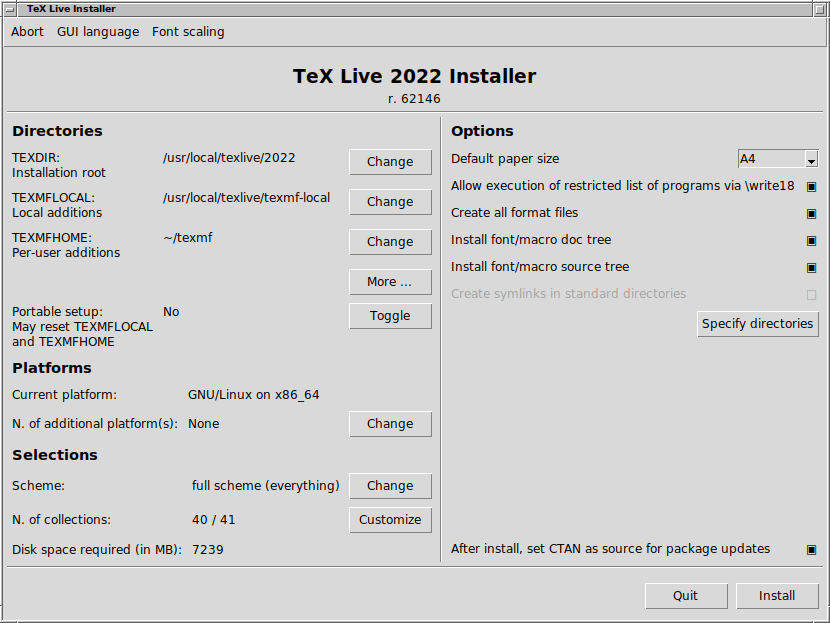

Руководство пользователя TeX Live — 2021
Редактор: Карл Берри
https://tug.org/texlive/
Март 2021
1 Введение
1.1 TeXLive и TeXCollection
1.2 Поддерживаемые операционные системы
1.3 Основы установки TeX Live
1.4 Соображения безопасности
1.5 Где можно получить поддержку
2 Структура TeX Live
2.1 TeX Collection: TeX Live, proTeXt, MacTeX
2.2 Корневые директории TeX Live
2.3 Описание директорий texmf
2.4 Расширения TeXа
2.5 Другие интересные программы в дистрибутиве TeX Live
3 Установка
3.1 Запуск программы установки
3.2 Работа программы установки
3.3 Опции вызова команды install-tl
3.4 Действия после установки
3.5 Тестирование системы
3.6 Ссылки на дополнительные программы
4 Установка системы в особых случаях
4.1 Установка в локальной сети
5 Установка TeX Live на флешку
6 Администрирование системы при помощи tlmgr
6.1 Графические оболочки для tlmgr
6.2 Примеры запуска программы tlmgr из командной строки
7 Дополнительные замечания о Windows
7.1 Дополнительные возможности Windows
7.2 Дополнительные пакеты для Windows
7.3 Домашняя директория под Windows
7.4 Регистр Windows
7.5 Права доступа под Windows
7.6 Закрытие директории TeX Live для записи
8 Руководство пользователя Web2C
8.1 Поиск файлов в Kpathsea
8.2 Базы данных файлов
8.3 Опции запуска
8.4 $TEXMFDOTDIR
9 Благодарности
10 История издания
10.1 Прошлое
10.2 2014
10.3 2015
10.4 2016
10.5 2017
10.6 2019
10.7 2020
10.8 Настоящее: 2021
10.9 Будущее
В этом документе описаны основные возможности программного продукта TeX Live — дистрибутива TeXа и других программ для GNU/Linux и других UNIXов, Mac OS X и Windows.
TeX Live можно скачать с Интернета, а можно получить на DVD «TeX Collection». Эти DVD распространяются группами пользователей TeXа. В разделе 2.1 кратко описано содержание такого DVD. И TeX Live, и TeX Collection поддерживаются группами пользователей TeXа. В этом документе в основном описан TeX Live.
В TeX Live включены программы TeX, LaTeX2e, ConTeXt, Metafont, MetaPost, BibTeX и многие другие; обширная коллекция макросов, шрифтов и документации; а также поддержка вёрстки на многих языках мира.
Краткий список основных изменений в этом издании TeX Live можно найти в разделе 10, стр. 77.
1.2 Поддерживаемые операционные системы
В TeX Live включены скомпилированные программы для многих вариантов UNIX, включая GNU/Linux, Mac OS X и Cygwin. Исходный код также включён в дистрибутив, что позволяет компилировать TeX Live и на платформах, для которых мы не включили собранных программ.
Что касается Windows: поддерживаются версии Windows 7 и младше. Windows Vista, скорее всего, будет большей частью работать, но TeX Live теперь даже не сможет установиться на Windows XP и старше. Мы не собрали 64-битовые программы для Windows, но 32-битовые варианты должны работать на 64-битовых системах. См. также способы добавить 64-битовые программы на странице https://tug.org/texlive/windows.html.
Альтернативные варианты для Windows и Mac OS X описаны в разделе 2.1.
TeX Live можно установить с DVD или с Интернета (https://tug.org/texlive/acquire.html). Программа для установки с сети сама по себе мала — она скачивает все нужное с Интернета.
Программа установки с DVD позволяет установить TeX Live на диск компьютера. Вы не сможете запускать TeX Live непосредственно с DVD, но вы можете собрать работающую версию TeX Live, например, на флешке USB (см. 5). Установка системы подробно описана в следующих разделах (стр. 11), но вкратце она состоит в следующем:
Насколько мы можем сказать, основные программы TeXа были и остаются очень надежными. Однако несмотря на все усилия, некоторые программы дистрибутива могут не достичь этого уровня. Как обычно, вы должны быть осторожны, обрабатывая любыми программами ненадежные исходные данные; для безопасности делайте это в отдельной поддиректории или под chroot.
Особенной осторожности требует работа под Windows, поскольку Windows обычно запускает в первую очередь копию программы из текущей директории, даже если существует другая копия там, где в системе обычно находятся бинарники. Это открывает много возможностей для хакерских атак. Мы закрыли много дыр в безопасности, но несомненно ещё больше дыр осталось, особенно в предоставленных нам чужих программах. Поэтому мы рекомендуем проверять подозрительные файлы в рабочей директории, особенно исполняемые файлы (бинарники и скрипты). Обычно их там быть не должно, и вёрстка документов не должна их создавать.
Наконец, TeX (и вспомогательные программы) способны писать в файлы при обработке документов. Это можно использовать для атаки разнообразными способами. И опять, безопаснее всего обрабатывать неизвестные документы в отдельной директории.
Еще один аспект безопасности состоит в том, чтобы иметь гарантию, что сгруженные из Интернета файлы не отличаются от созданных авторами. Программа tlmgr (раздел 6) автоматически проводит криптографическую проверку сгруженных файлов, если в системе установлена программа gpg (GNU Privacy Guard). Хотя программа gpg не входит в комплект поставки TeX Live, на странице https://texlive.info/tlgpg/ можно найти ее версию для Windows или MacOS.
1.5 Где можно получить поддержку
Сообщество пользователей TeXа активно и дружелюбно, и практически на каждый серьёзный вопрос найдётся ответ. Однако эта поддержка неформальна, выполняется добровольцами, и поэтому очень важно, чтобы вы сами попробовали найти ответ перед тем, как задавать вопрос. (Если вы предпочитаете коммерческую поддержку, возможно вам стоит вместо TeX Live купить одну из коммерческих версий TeXа, см. список по адресу https://tug.org/interest.html#vendors).
Вот список источников поддержки, приблизительно в том порядке, в котором мы рекомендуем к ним обращаться:
Страница для новичков:
Если вы — новичок, то страница https://tug.org/begin.html может послужить для начала.
TeX FAQ:
TeX FAQ (ЧаВо, часто задаваемые вопросы) — огромная коллекция ответов на всевозможные вопросы, от самых простых до самых сложных. Английская версия ЧаВо находится на TeX Live в разделе texmf-dist/doc/generic/FAQ-en/ и доступна в Интернете по адресу https://texfaq.org. Пожалуйста, начинайте поиск ответа на ваши вопросы отсюда.
TeX Catalogue:
Если вы ищете какой-либо пакет, шрифт, программу и т.п., то вам стоит заглянуть в TeX Catalogue. Это огромный каталог всего, что относится к TeXу. См. https://www.ctan.org/pkg/catalogue.
TeX во всемирной паутине:
Вот страничка, на которой много ссылок по TeXу, включая многочисленные книги, руководства и статьи: https://tug.org/interest.html.
Архивы списков рассылки и групп:
Основные форумы технической поддержки TeXа — сообщество пользователей LaTeXа https://latex.org/, сайт вопросов и ответов https://tex.stackexchange.com, группа news:comp.text.tex и список рассылки texhax@tug.org. В их архивах тысячи вопросов и ответов на все случаи жизни. См. для последних двух https://groups.google.com/groups?group=comp.text.tex и https://tug.org/mail-archives/texhax. Поиск в сети тоже часто помогает найти ответ.
Вопросы на форумах
Если вы не можете найти ответа на ваш вопрос, вы можете либо опубликовать вопрос в http://latex.org/ или https://tex.stackexchange.com/ через Web, или в comp.text.tex при помощи Google или вашей любимой новостной программы, либо послать письмо на лист рассылки texhax@tug.org. Но перед этим пожалуйста прочтите в ЧаВо совет о том, как правильно задавать вопросы на этих форумах: https://texfaq.org/FAQ-askquestion.
Поддержка TeX Live
Если вы хотите сообщить о баге или высказать нам свои предложения и замечания о дистрибутиве TeX Live, его установке или документации, пишите на лист рассылки tex-live@tug.org. Однако если ваш вопрос касается конкретной программы, входящей в TeX Live, вам лучше задавать вопросы её автору или посылать их на соответствующий список рассылки. Часто соответствующий адрес можно получить при помощи опции --help нужной программы.
Русскоязычные ресурсы
(добавлено переводчиком) Эхоконференция ru.tex доступна как в сети ФИДО, так и в Интернете (как news:fido7.ru.tex). Русские группы ФИДО можно найти на многих серверах, например demos.ddt.su. В ЧаВо этой группы приводится много ссылок на русскоязычные ресурсы.
С другой стороны, вы сами тоже можете помочь тем, у кого есть вопросы. Ресурсы выше открыты для всех, поэтому вы тоже можете присоединиться, читать и помогать другим.
Этот раздел описывает структуру и содержание TeX Collection и его составной части TeX Live.
2.1 TeX Collection: TeX Live, proTeXt, MacTeX
DVD TeX Collection содержит следующие пакеты:
TeX Live:
полная система, которую можно установить на жесткий диск компьютера. Её домашняя страница https://tug.org/texlive/.
MacTeX:
вариант для Mac OS X (Apple теперь называет Mac OS X macOS, но мы в этом документе используем старое название). Этот пакет добавляет к TeX Live программу установки для Mac OS X и другие программы для Макинтошей. Страница проекта — https://www.tug.org/mactex/.
proTeXt:
улучшенный вариант дистрибутива MiKTeX для Windows. proTeXt включает в себя дополнительные программы и упрощённую установку. Он не зависит от TeX Live и включает собственные инструкции по установке. Страница proTeXt — https://tug.org/protext.
CTAN:
Зеркало архива CTAN (https://ctan/org).
Лицензии на использование CTAN, protext и texmf-extra могут отличаться от лицензии TeX Live, поэтому будьте внимательны при распространении или модификации программ, входящих в эти дистрибутивы.
2.2 Корневые директории TeX Live
Вот краткое описание корневых директорий в дистрибутиве TeX Live.
bin:
Программы системы TeX, сгруппированные по платформам.
readme-*.dir:
Краткое руководство пользователя и коллекция ссылок на разных языках, в текстовом формате и формате HTML.
source:
Исходный код всех программ, включая дистрибутивы Web2C TeX и Metafont.
texmf-dist:
См. TEXMFDIST ниже.
tlpkg:
Скрипты, программы и другие файлы для поддержки системы, а также некоторые полезные программы для Windows
Файл doc.html в корневой директории содержит много ссылок на полезную документацию. Документация к отдельным программам (руководства, man, info) находится в директории texmf-dist/doc. Документация макропакетов и форматов находится в директории texmf-dist/doc. Для поиска документации можно воспользоваться программой texdoc.
Документация к самому дистрибутиву TeX Live находится в директории texmf-dist/doc/texlive и доступна на нескольких языках:
В этом разделе описаны все переменные, задающие положение деревьев директорий texmf и их значения по умолчанию. Команда tlmgr conf показывает текущие значения этих переменных, так что вы можете определить, где эти директории находятся в вашей системе.
Все эти деревья, включая личные деревья пользователя, должны следовать стандарту директорий TeX (TDS, http://tug.org/tds) со всеми сотнями поддиректорий, иначе система может не найти нужные файлы. Более подробно это описано в разделе 3.4.6 (стр. 41). Порядок, указанный ниже, соответствует обратному порядку поиска по деревьям, то есть последующие файлы имеют преимущество.
TEXMFDIST
Дерево, где находятся практически все файлы дистрибутива: конфигурационные файлы, шрифты, скрипты, пакеты и т.д. (основное исключение — зависящие от архитектуры программы, которые находятся в директории bin/.)
TEXMFLOCAL
Дерево, которое может быть использовано администраторами системы для дополнительных пакетов, шрифтов и т.д.
TEXMFSYSVAR
Это дерево используется утилитами texconfig-sys, updmap-sys, fmtutil-sys, а также tlmgr для хранения создаваемых автоматически файлов: форматов, карт шрифтов, — общих для всех пользователей.
TEXMFSYSCONFIG
Это дерево используется утилитами texconfig-sys, updmap-sys и fmtutil-sys для хранения модифицированных файлов конфигурации, общих для всех пользователей.
TEXMFHOME
Дерево, которое пользователи могут использовать для установки собственных пакетов, шрифтов и т.д., или для обновлённых версий системных пакетов. Эта переменная указывает на дерево в домашней директории, своей для каждого пользователя.
TEXMFVAR
Это дерево используется утилитами texconfig, updmap-user и fmtutil-user для хранения создаваемых автоматически файлов: форматов, карт шрифтов.
TEXMFCONFIG
Это дерево используется утилитами texconfig, updmap-sys и fmtutil-sys для хранения модифицированных файлов конфигурации (своих для каждого пользователя)
TEXMFCACHE
Это дерево используется программами ConTeXt MkIV и LuaLaTeX для хранения файлов, создаваемых автоматически при работе программ. По умолчанию совпадает с TEXMFSYSVAR, или, если эта директория закрыта для записи, TEXMFVAR.
По умолчанию структура директорий выглядит так:
корневая директория
может содержать несколько версий TeX Live (по умолчанию для Линукса это /usr/local/texlive):
2020
Предыдущая версия.
2021
Текущая версия.
bin
i386-linux
Программы для GNU/Linux (32-битовая версия)
...
x86_64-darwin
Программы для Mac OS X
x86_64-linux
Программы для GNU/Linux (64-битовая версия)
win32
Программы для Windows
texmf-dist
TEXMFDIST и TEXMFMAIN
texmf-var
TEXMFSYSVAR, TEXMFCACHE
texmf-config
TEXMFSYSCONFIG
texmf-local
TEXMFLOCAL, общая для всех версий TeX Live.
домашняя директория пользователя
($HOME или %USERPROFILE%)
.texlive2020
Данные и конфигурационные файлы предыдущей версии.
.texlive2021
Данные и конфигурационные файлы текущей версии.
texmf-var
TEXMFVAR
texmf-config
TEXMFCONFIG
texmf
TEXMFHOME Личные макропакеты и т.д.
Кнутовский вариант TeXа заморожен — за исключением редких исправлений багов, в него не вносится никаких изменений. Он распространяется в TeX Live как tex и будет распространяться в обозримом будущем. В состав TeX Live входит несколько расширений TeXа:
e-TeX
добавляет набор новых примитивов (относящийся к макроподстановкам, чтению символов, дополнительным возможностям отладки и многому другому) и расширения TeX--XE T для вёрстки справа налево и слева направо. В обычном режиме e-TeX на 100% совместим со стандартнымTeXом. См. texmf-dist/doc/etex/base/etex_man.pdf.
pdfTeX
включает в себя расширения e-TeXа, добавляя поддержку формата PDF, помимо стандартного DVI, а также много других новых возможностей. Эта программа используется многими форматами, например, etex, latex, pdflatex. Страница программы на сети: http://www.pdftex.org/. В руководстве пользователя texmf-dist/doc/pdftex/manual/padftex-a.pdf и примерах texmf-dist/doc/pdftex/samplepdftex/samplepdf.tex описаны возможности программы.
LuaTeX
обеспечивает поддержку Unicode, шрифтов в форматах TrueType и OpenType, а также системных шрифтов. Встроенный интерпретатор языка Lua (см. https://www.lua.org/) позволяет элегантно решить многие сложные проблемы TeXа. Когда эта программа запускается как texlua, она работает как интерпретатор Lua. См. https://www.luatex.org/ и texmf-dist/doc/luatex/base/luatexref.pdf.
(e)(u)pTeX
обеспечивают поддержку японских требований к верстке. Базовой программой является pTeX, в то время как e-варианты добавляют расширения eTeX, а u-варианты поддержку Unicode.
XeTeX
добавляет поддержку Unicode и шрифтов в формате OpenType, сделанную через стандартные библиотеки. См. https://tug.org/xetex.
Omega (Омега)
основана на Unicode (система 16-битовых символов), что позволяет работать одновременно почти со всеми письменностями мира. Она также поддерживает так называемый «процесс трансляции Omega» (OTP) для сложных преобразований произвольного входного потока. Омега больше не включается в дистрибутив TeX Live в качестве самостоятельной программы; на диске есть только Aleph (см. ниже).
Aleph
объединяет Omega и e-TeX. См. краткую документацию в texmf-dist/doc/aleph/base.
2.5 Другие интересные программы в дистрибутиве TeX Live
Вот несколько других важных программ в дистрибутиве TeX Live:
bibtex, biber
поддержка библиографий.
makeindex, xindy
поддержка алфавитных указателей.
dvips
преобразование DVI в PostScript.
xdvi
программа для просмотра DVI для X Window System.
dviconcat, dviselect
перестановка страниц в файлах DVI.
dvipdfmx
преобразование DVI в PDF, альтернатива pdfTeXу, упомянутому выше.
psselect, psnup, …
утилиты для работы с файлами в формате PostScript.
pdfjam, pdfjoin, …
утилиты для работы с файлами в формате PDF.
context, mtxrun
Программы для ConTeXtа и обработки PDF.
htlatex, …
tex4ht: конвертер из (LA )TeXа в HTML, (и XML и многие другие форматы).
3.1 Запуск программы установки
Для начала вам потребуется DVD TeX Collection или программа установки TeX Live с Интернета. Подробно различные способы приобретения и установки дистрибутива рассмотрены на странице https://tug.org/texlive/acquire.html.
Установка с сети, архив (.zip или .tag.gz):
скачайте файл из архива CTAN, директория systems/texlive/tlnet; адрес http://mirror.ctan.org/systems/texlive/tlnet должен автоматически привести к ближайшему зеркалу архива. Вы можете скачать либо install-tl.zip (установка под UNIX и Windows), либо файл существенно меньшего размера install-unx.tar.gz (только для UNIX). После распаковки файлы install-tl и install-tl.bat окажутся в поддиректории install-tl.
Установка с сети, программа .exe (только Windows):
Скачайте файл из архива CTAN, как указано выше, и запустите его. Это запускает распаковщик и установщик первой ступени, см. рис. 1. Он предлагает выбрать из двух вариантов: «Install» начинает установку в обычном режиме, «Unpack only» — распаковка без установки.
TeX Collection DVD:
Перейдите в поддиректорию texlive. Под Windows программа установки запускается автоматически, когда вы вставляете DVD в компьютер. Вы можете получить DVD, вступив в группу пользователей TeXа (мы настоятельно рекомендуем это сделать, https://tug.org/usergroups.html), либо купив его отдельно (https://tug.org/store), либо сделав его самостоятельно, скачав ISO образ диска. После установки системы вы сможете получать обновления из Интернета, см. раздел 3.4.3.
Рис. 1:Первая ступень установки под Windows (.exe)
Во всех случаях программа установки системы одна и та же. Главное различие состоит в том, что при установке с сети ставятся последние версии пакетов — в отличие от установки с DVD или ISO.
Если вам нужно использовать прокси для Wget, занесите их в файл /.wgetrc или задайте их в переменных окружения, как описано в (https://www.gnu.org/software/wget/manual/html_node/Proxies.html) для программы Wget — или задайте их, как описано в руководстве программы, которую вы используете для скачивания файлов. Разумеется, эти соображения неважны, если вы устанавливаете с DVD или ISO.
В следующих разделах установка описывается более подробно.
Ниже > указывает системный промпт; то, что вводит пользователь, показано жирным шрифтом. Проще всего начать установку так:
> cd /path/to/installer
> perl install-tl
(Вместо этого вы можете запустить perl /path/to/installer/install-tl, или ./install-tl, если у этого скрипта есть права на выполнение, и т.д. Мы не будем указывать все эти варианты.) Возможно, вам придется увеличить размер окна терминала, чтобы в него поместился весь диалог (Рисунок 2).
Для установки в графическом режиме (рисунок 4) вам потребуется модуль Tcl/Tk. Если он у вас установлен, используйте
> perl install-tl -gui
Старые режимы wizard и perltk/expert все еще доступны, но теперь они эквивалентны режиму -gui. Полный список возможных опций дает команда
> perl install-tl -help
О правах доступа в UNIX: система установки TeX Live использует текущее значение параметра umask. Поэтому, если вы хотите, чтобы системой могли пользоваться не только вы, но и другие пользователи, вы должны установить, например, umask 022. Более подробно umask обсуждается в документации к вашей системе.
Замечание об установке под Cygwin: в отличие от других систем типа UNIX, Cygwin в стандартной конфигурации не включает всех необходимых для установки TeX Live программ. См. раздел 3.1.4.
Как отмечается в разделе 2.1, для Mac OS X существует специальный дистрибутив, MacTeX (https://tug.org/mactex). Мы рекомендуем пользоваться его системой установки, а не общим скриптом TeX Live, поскольку у него есть дополнительные возможности, специфические для Макинтошей, например, удобное переключение между различными дистрибутивами TeXа для Mac OS X (MacTeX, Fink, MacPorts, …), которые соответствуют стандарту TeXDist.
MacTeX основан на TeX Live, основные деревья директорий и программы у этих дистрибутивов совпадают. MacTeX добавляет несколько поддиректорий с программами и документацией, предназначенными для Макинтошей.
Если вы устанавливаете систему с сети при помощи распакованного архива .zip, или если программа установки с DVD не стартовала автоматически, дважды щёлкните по install-tl-windows.bat.
Можно также запустить программу из командной строки. Ниже > означает системный промпт; то, что вводит пользователь, указано жирным шрифтом. Если вы находитесь в директории программы установки, напечатайте:
> install-tl-windows
Программу можно вызвать и из другой директории, например,
> D:\texlive\install-tl-windows
(предполагается, что в D: находится DVD TeX Collection). На рисунке 3 показан специальный проводник установки, который по умолчанию запускается в Windows.
Для установки в текстовом режиме используйте
> install-tl-windows -no-gui
Все опции программы можно получить при помощи команды
> install-tl-windows -help
Installing TeX Live 2021 from: ...
Platform: x86_64-linux => ’GNU/Linux on x86_64’
Distribution: inst (compressed)
Directory for temporary files: /tmp
Detected platform: GNU/Linux on x86_64
<S> Installation scheme: scheme-full
Customizing installation scheme:
40 collections out of 41, disk space required: 7172 MB
TEXDIR (the main TeX directory):
[ ] use letter size instead of A4 by default
<V> set up for portable installation
<I> start installation to hard disk
<P> save installation profile to ’texlive.profile’ and exit
Рис. 2:Главное меню программы установки в текстовом режиме (GNU/Linux)
Рис. 3:Меню программы установки (Windows). Кнопка Advanced вызывает режим, похожий на рис. 4

Рис. 4:Экспертное меню установки (GNU/Linux)
Перед началом установки TeX Live установите при помощи программы setup.exe из комплекта Cygwin пакеты perl и wget, если их нет в вашей системе. Мы рекомендуем также следующие дополнительные пакеты:
3.1.5 Установка в текстовом режиме
На рисунке 2 показано основное меню программы установки в текстовом режиме для UNIX. Текстовый режим является режимом по умолчанию для UNIX.
Интерфейс программы довольно примитивен: поддержки курсора в нем нет. Например, нельзя передвигаться по полям при помощи клавиши «Tab». Вы просто печатаете что-то (регистр учитывается!) и нажимаете клавишу «Enter», после чего перерисовывается весь экран.
Этот интерфейс примитивен для того, чтобы работать на как можно большем количестве платформ, включая такие, где есть только усеченный вариант программы Perl.
3.1.6 Установка в графическом режиме
По умолчанию графическая установка начинается очень просто, позволяя выбрать всего из нескольких опций, см. рис. 3. Этот вариант может быть выбран командой
> install-tl -gui
Кнопка Advanced дает доступ к большинству возможнотей текстового установщика, см. рис. 4.
Режимы perltk/expert и wizard теперь эквивалентны стандартнаму графическому установщику.
3.2 Работа программы установки
Меню программы установки должно быть понятно без объяснений. Мы все же приведем несколько кратких замечаний по поводу различных опций и подменю.
3.2.1 Меню выбора платформы (только для UNIX)
=================================================
a [ ] Cygwin on Intel x86 (i386-cygwin)
b [ ] Cygwin on x86_64 (x86_64-cygwin)
c [ ] MacOSX current (10.14-) on ARM/x86_64 (universal-darwin)
d [ ] MacOSX legacy (10.6-) on x86_64 (x86_64-darwinlegacy)
e [ ] FreeBSD on x86_64 (amd64-freebsd)
f [ ] FreeBSD on Intel x86 (i386-freebsd)
g [ ] GNU/Linux on ARM64 (aarch64-linux)
h [ ] GNU/Linux on ARMv6/RPi (armhf-linux)
i [ ] GNU/Linux on Intel x86 (i386-linux)
j [X] GNU/Linux on x86_64 (x86_64-linux)
k [ ] GNU/Linux on x86_64 with musl (x86_64-linuxmusl)
l [ ] NetBSD on x86_64 (amd64-netbsd)
m [ ] NetBSD on Intel x86 (i386-netbsd)
o [ ] Solaris on Intel x86 (i386-solaris)
p [ ] Solaris on x86_64 (x86_64-solaris)
Рис. 5:Меню выбора платформы
На рисунке 5 изображено меню выбора платформы. По умолчанию устанавливаются только программы для вашей текущей архитектуры. В этом меню вы можете выбрать также установку программ для других платформ. Это может быть полезно, если вы используете одно и то же дерево TeXа для разных машин и раздаёте его по локальной сети, либо если на вашей машине установлено несколько операционных систем.
3.2.2 Выбор основных компонентов
=================================================
a [X] full scheme (everything)
b [ ] medium scheme (small + more packages and languages)
c [ ] small scheme (basic + xetex, metapost, a few languages)
d [ ] basic scheme (plain and latex)
e [ ] minimal scheme (plain only)
h [ ] infrastructure-only scheme (no TeX at all)
i [ ] teTeX scheme (more than medium, but nowhere near full)
j [ ] custom selection of collections
Рис. 6:Выбор основных компонентов
На рисунке 6 показано меню выбора основных компонентов (схем) TeX Live. В этом меню вы можете выбрать «схему», т.е. набор коллекций пакетов. По умолчанию используется схема full, т.е. все пакеты TeX Live. Мы рекомендуем эту схему, но вы можете выбрать схему basic, которая устанавливает только plain TeX и LaTeX, схему small, которая устанавливает еще несколько программ (она эквивалентна так называемой Basix TeX installation для MacTeX), схему minimal для тестирования или схему medium, или схему teTeX. Есть также ряд специальных схем, в том числе и предназначенных для различных стран.
Рис. 7:Меню коллекций
Вы можете уточнить ваш выбор при помощи меню «коллекций» (рисунок 7, для разнообразия сделанный в графическом режиме).
Коллекции представляют собой следующий после схем уровень иерархии TeX Live. Грубо говоря, схемы состоят из коллекций, коллекции состоят из пакетов, а пакеты (нижний уровень иерархии TeX Live) содержат макросы, шрифты и т.д.
Если вы хотите более тонкой настройки, чем возможна в меню коллекций, вы можете использовать программу tlmgr после установки (см. раздел 6). Эта программа позволяет устанавливать или удалять отдельные пакеты.
Схема директорий, создаваемых по умолчанию, описана в разделе 2.3, стр. 8. По умолчанию дерево установки в системе Unix /usr/local/texlive/2021 и %SystemDrive%\texlive\2021 под Windows. Это позволяет установить несколько параллельных вариантов TeX Live (например, версий разных лет, как в нашем примере) и переключаться между ними, изменив список директорий поиска программ.
Вы можете изменить положение дерева, задав для установщика другое значение параметра TEXDIR. На рисунке 4 показано, как изменить этот и другие параметры. Основные причины, по которой бывает необходимо его изменить — недостаток места в разделе (полная установка TeX Live требует нескольких гигабайт диска) или отсутствие у вас прав на запись в нужные директории. Вам не нужно иметь права администратора для установки TeX Live, однако вам необходимо иметь право на запись в директорию, куда устанавливается система.
Директории для установки можно также изменить, задав ряд переменных окружения (например, TEXLIVE_INSTALL_PREFIX и TEXLIVE_INSTALL_TEXDIR); см. документацию, выдаваемую по команде install-tl --help (также доступную по ссылке https://tug.org/texlive/doc/install-tl.html), где находится полный список переменных окружения и другие детали.
Если у вас нет права на запись в системные директории, естественной альтернативой является установка в вашу домашнюю директорию, особенно если вы будете единственным пользователем системы. Для этого используйте ‘~’ (например, ‘~/texlive/2021’).
Мы рекомендуем включать номер года в название директории, чтобы можно было держать отдельно разные версии TeX Live. Вы также можете использовать общее имя, не зависящее от года, например, /usr/local/texlive-cur, создав ссылку на соответствующую директорию.
Изменение TEXDIR изменит также TEXMFLOCAL, TEXMFSYSVAR и TEXMFSYSCONFIG.
Личные пакеты и файлы рекомендуется держать в директории TEXMFHOME. По умолчанию это ~/texmf (~/Library/texmf для Макинтошей). В отличие от TEXDIR, здесь ~ будет своим для каждого пользователя. Эта переменная становится $HOME под UNIX и %USERPROFILE% под Windows. На всякий случай повторим, что структура TEXMFHOME должна совпадать со стандартной структурой директорий TEXMF, иначе система может не найти ваши файлы.
Директория TEXMFVAR используется для хранения автоматически создаваемых файлов, своих для каждого пользователя. Директория TEXMFCACHE используется для этой же цели программами LuaLaTeX и ConTeXt MkIV (см. раздел 3.4.5, стр. 40), по умолчанию это директория TEXMFSYSVAR, или, если она закрыта для записи, TEXMFVAR.
=================================================
<P> use letter size instead of A4 by default: [ ]
<E> execution of restricted list of programs: [X]
<F> create all format files: [X]
<D> install font/macro doc tree: [X]
<S> install font/macro source tree: [X]
<L> create symlinks in standard directories: [ ]
<Y> after install, set CTAN as source for package updates: [X]
Рис. 8:Меню опций (Unix)
На рисунке 8 приведено меню опций (текстовый режим). Стоит упомянуть несколько из них:
use letter size instead of A4 by default (использовать по умолочанию размер letter вместо A4):
выбор размера бумаги по умолчанию. Разумеется, отдельные документы могут при необходиости указать собственный размер бумаги.
execution of restricted list of programs:
Начиная с TeX Live 2010 TeX может автоматически вызывать несколько внешних программ. Список этих программ находится в файле texmf.cnf; он очень мал, но эти программы очень полезны. См. раздел «Что нового в TeX Live 2010» 10.1.7.
create all format files (созать все форматы):
Хотя ненужные форматы занимают место на диске и требуют времени для создания, мы все же рекомендуем не изменять эту опцию. В противном случае отсутствующие форматы будут создаваться в директориях TEXMFVAR для каждого пользователя. Они не будут автоматически перегенерироваться при изменении программ и схем переноса, и в итоге могут оказаться несовместимыми с новой системой.
install font/macro … tree:
Установить документацию и исходники для большинства пакетов. Не рекомендуется убирать эту опцию.
create symlinks in standard directories (создать симлинки в стандартных директориях)
(только для UNIX): Эта опция делает ненужной смену переменных окружения. Без неё директории TeX Live нужно добавить к PATH, MANPATH и INFOPATH. Для этой опции вам нужны права на запись в стандартные директории. Эта опция нужна для создания симлинков в директориях типа /usr/local/bin, которые не содержат файлов TeXа из системного дистрибутива. Не следует при помощи этой опции подменять системные файлы, например, указывая /usr/bin. Наиболее безопасный и рекомендованный вариант — не выбирать эту опцию.
after install, set CTAN as source for package updates:
Если вы устанавливаете систему с DVD, эта опция включена по умолчанию, поскольку обычно люди обновляют пакеты из архива CTAN, который сам непрерывно обновляется. Единственной причиной, по которой вы можете захотеть выключить её, может быть то, что вы устанавливаете только несколько пакетов из DVD и планируете изменить систему позже. В любом случае вы можете задать альтернативный репозиторий для обновлений, см. разделы 3.3.1 и 3.4.3.
Опции, специфические для Windows в экспертном варианте интерфейса:
adjust searchpath (добавить директории поиск)
Эта опция позволяет всем программам найти директорию TeX Live.
add menu shortcuts (добавить ярлыки меню)
Если эта опция выбрана, то в меню Start появится подменю TeX Live. Есть также опции ‘Launcher entry’ и ‘No shortcuts’. Эти опции описаны в разделе 4.1.
File associations (изменить ассоциации файлов)
Есть выбор между ‘Only new’ (установить новые ассоциации, но не убирать уже существующих), ‘All’ (все) and ‘None’ (не устанавливать).
install TeXworks front end (установить TeXworks)
Задав нужные настройки, вы можете начать установку системы, нажав клавишу «I» в текстовом варианте или кнопку «Install TeX Live» в GUI. Когда установка будет закончена, перейдите к разделу 3.4, чтобы проверить, нужно ли вам сделать ещё что-нибудь.
3.3 Опции вызова команды install-tl
Напечатайте
> install-tl -help
чтобы получить список опций комадной строки. В опциях можно использовать как -, так и --. Вот самые интересные опции:
-gui
Если возможно, использовать графический режим. Для этого нужен Tcl/Tk версии 8.5 и выше. Он есть под Mac OS X и поставляется вместе с TeX Live под Windows. Устарелые варианты -gui=perltk и -gui=wizard все еще доступны. Если в системе нет ни Tcl/Tk, ни Perl/Tk, установка происходит в текстовом режиме.
-no-gui
Использовать текстовый режим.
-lang LL
Задать язык интерфейса программы установки (стандартным кодом страны, обычно двухбуквенным). Программа установки пытается определеть нужный язык автоматически, но если это не получается или если нужный язык не поддерживается, она переходит на английский. Команда install-tl --help выдает список языков.
(Документируется здесь для полноты; не используйте эту опцию если вы не эксперт). Если у вас уже есть копия TeX Live, полученная из репозитория по rsync, svn или иным способом (см. https://tug.org/texlive/acquire-mirror.html), то эта опция позволяет использовать эту копию. Учтите, что при этом база данных tlpkg/texlive.tlpdb может быть затерта; вы должны сохранить её сами. Кроме того, удаление пакетов нужно будет делать вручную. Эту опцию нельзя выбрать из интерфейса установщика.
-portable
Установить переносимую версию TeX Live, например, на флешку USB. Эту опцию также можно указать при помощи команды V в текстовом установки, или из графического режима. См. также раздел 5.
-profile файл
Использовать конфигурацию установки file и не задавать пользователю никаких вопросов. Программа установки всегда записывает файл texlive.profile в поддиректорию tlpkg. Этот файл может быть использован в качестве аргумента данной опции, чтобы, например, получить идентичную конфигурацию на другой машине. Вы можете также создать собственную конфигурацию, например, взяв за основу автоматически созданный файл или пустой файл (так что параметры, которые не заданы в файле, получат значения по умолчанию).
-repository url или директория
Указать альтернативный источник пакетов для установки; см. ниже.
По умолчанию пакеты сгружаются с одного из зеркал архива CTAN. Ссылка https://mirror.ctan.org автоматически выбирает зеркало.
Если вы хотите указать другой источник, вы можете задать его как URL, начинающийся с ftp:, http:, https:, file:/ или просто как директорию на диске. (Когда вы указываете репозиторию как http:, https: или ftp:, окончание / или /tlpkg игнорируется.)
Например, вы можете задать в качестве параметра определенное зеркало CTAN: https://ctan.example.org/tex-archive/texlive/tlnet/. Разумеется, вам следует подставить вместо example.ctan.org нужное зеркало и путь к архиву на этом зеркале. Список зеркал находится на https://ctan.org/mirrors.
Если параметр задает директорию на диске (прямо или при помощи file:/), система автоматически определяет, является ли источник архивом: если найдена поддиректория archive со сжатыми файлами, то она будет использована, даже если рядом находятся незаархивированные файлы.
Иногда после установки системы требуются дополнительные действия.
3.4.1 Переменные окружения для UNIX
Если вы решили создать симлинки в стандартных директориях (см. раздел 3.2.4), то изменять переменные окружения не требуется. В противном случае вам нужно добавить к списку поиска программ директорию, где лежат программы TeXlive (под Windows программа установки делает это сама).
Программы для каждой архитектуры помещаются в собственную поддиректорию под TEXDIR/bin. См. список поддиректорий и соответствующих платформ на рисунке 5.
Вы можете также добавить директории с документацией в формате man и info к соответствующим путям поиска, если вы хотите, чтобы ваша операционная система знала о них. В некоторых системах документация в формате man будет найдена автоматически после изменения переменной PATH.
Ниже мы используем для примера стандартную систему директорий в системе Intel86 GNU/Linux.
Для оболочек типа Bourne (bash и т.п.) вы можете добавить в файл $HOME/.profile (или в файл, который вызывается из .profile) следующее:
PATH=/usr/local/texlive/2021/bin/x86_64-linux:$PATH; export PATH
MANPATH=/usr/local/texlive/2021/texmf-dist/doc/man:$MANPATH; export MANPATH
INFOPATH=/usr/local/texlive/2021/texmf-dist/doc/info:$INFOPATH; export INFOPATH
Для csh или tcsh следует редактировать файл $HOME/.cshrc, и следует добавить что-то вроде
setenv PATH /usr/local/texlive/2021/bin/x86_64-linux:$PATH
setenv MANPATH /usr/local/texlive/2021/texmf-dist/doc/man:$MANPATH
setenv INFOPATH /usr/local/texlive/2021/texmf-dist/doc/info:$INFOPATH
Разумеется, в ваших конфигурационных файлах уже могут быть определены эти переменные; фрагменты выше добавляют к ним директории TeX Live.
3.4.2 Переменные окружения: глобальная конфигурация
Если вы хотите внести эти изменения для всех пользователей или добавлять их автоматически для новых пользователей, то вам следует разобраться самому: в разных системах это делается слишком по-разному.
Два совета: 1) возможно, вам следует добавить в файл /etc/manpath.config строчки вроде:
MANPATH_MAP /usr/local/texlive/2021/bin/x86_64-linux \
/usr/local/texlive/2021/texmf-dist/doc/man
И 2) иногда пути поиска и другие глобальные переменные окружения задаются в файле /etc/environment.
Мы также добавляем симлинк man в каждой поддиректории bin. Некоторые варианты программы man, например, в Mac OS X, автоматически ищут файлы в этих поддиректориях, что избавляет от необходимости добавлять их в MANPATH.
3.4.3 Обновления из Интернета после установки с DVD
Если вы устновили TeX Live с DVD и хотите получать обновления из Интернета, запустите следующую команду (после добавления программ TeX Live к списку поиска программ, см. предыдущий раздел):
> tlmgr option repository https://mirror.ctan.org/systems/texlive/tlnet
Она указывает программе tlmgr, что нужно искать обновления на ближайшем зеркале CTAN. Это делается по умолчанию при установке с DVD при помощи опций, описанных в разделе 3.2.4.
Если автоматический выбор зеркала не работает, вы можете указать адрес зеркала вручную, взяв его из списка на https://ctan.org/mirrors. Задайте при этом точное положение директории tlnet, как указано выше.
3.4.4 Настройка шрифтов для программ XeTeX и LuaTeX
XeTeX и LuaTeX могут использовать все шрифты, установленные в вашей системе, не только те, которые находятся в директориях TeXа. Они это делают при помощи похожих, но чуть-чуть разных методов.
Под Windows шрифты, включенные в дистрибутив TeX Live, автоматически доступны в XeTeXе по названию шрифта. Под Mac OS X настройка поиска шрифтов по имени требует дополнительных шагов, см. руководство пользователя MacTeX (https://tug.org/mactex). Настройка поиска шрифтов по имени для других Юниксов описана ниже.
Для поиска шрифтов по имени, когда пакет xetex устанавливается (либо при первоначальной установке дистрибутива, либо позже), он создает необходимый конфигурационный файл в TEXMFSYSVAR/fonts/conf/texlive-fontconfig.conf.
Если вы обладаете правами администратора, то для того, чтобы шрифты TeX Live были доступны всем программам, сделайте следующее:
Если у вас нет прав администратора, то вы можете вместо этого сделать шрифты TeX Live доступными только вам:
Чтобы посмотреть названия системных шрифтов, вы можете запустить программу fc-list. Можно получить много интересной информации, запустив её как fc-list : family style file spacing (все аргументы—текстовые строки).
Как «старый» ConTeXt(Mark II), так и «новый» ConTeXt (Mark IV), должны работать «из коробки» после установки TeX Live и после обновления системы при помощи tlmgr.
Однако, так как ConTeXt MkIV не использует библиотеку kpathsea, после установки новых файлов вручную (не при помощи tlmgr) нужны дополнительные действия. Каждый пользователь MkIV должен после такого обновления запустить
чтобы обновить базу данных ConTeXt. Получившиеся файлы будут установлены в директории TEXMFCACHE. В TeX Live эта директория совпадает с TEXMFVAR.
ConTeXt MkIV читает файлы из всех директорий, заданных переменной TEXMFCACHE и пишет в первую директорию в списке, в которой у него есть права на запись. При чтении в случае дублирующих записей имеет преимущество последняя прочитанная запись.
См. также https://wiki.contextgarden.net/Running_Mark_IV.
3.4.6 Добавление личных и локальных пакетов
Этот вопрос уже обсуждался в разделе 2.3: для локальных шрифтов и пакетов, общих у всех пользователей, предназначена директория TEXMFLOCAL (по умолчанию /usr/local/texlive/texmf-local или %SystemDrive%\texlive\texmf-local), а для личных шрифтов и пакетов — директория TEXMFHOME (по умолчанию $HOME/texmf или %USERPROFILE%\texmf). Эти директории предполагаются общими для всех версий TeX Live, и каждая версия TeX Live видит их автоматически. Поэтому мы не рекомендуем менять значение TEXMFLOCAL, иначе вам придется делать это для каждой новой версии.
Файлы в обеих директориях должны находиться в правильных поддиректориях; см. https://tug.org/tds и texmf-dist/web2c/texmf.cnf. Например, LaTeXовский класс или пакет должен находиться в директории TEXMFLOCAL/tex/latex или TEXMFHOME/tex/latex или какой-либо из их поддиректорий.
Для директории TEXMFLOCAL должна поддерживаться база данных о файлах, иначе система не сможет найти там нужные файлы. Эта база обновляется командой mktexlsr или кнопкой «Reinit file database» в графическом режиме программы tlmgr.
По умолчанию, каждая из этих переменных указывает на одну директорию, как в нашем примере. Однако это не обязательное требование. Если вам нужно, например, поддерживать несколько версий больших пакетов, вы можете захотеть иметь несколько деревьев директорий. Тогда вы можете определить TEXMFHOME как набор директорий в фигурных скобках, разделенных запятыми:
TEXMFHOME = {/my/dir1,/mydir2,/a/third/dir}
Подробнее эти вопросы объясняются в разделе 8.1.5.
3.4.7 Добавление новых шрифтов
К сожалению, это очень сложная задача для TeXа и pdfTeXа. Не делайте этого, если вы не знаете TeX как свои пять пальцев. В состав TeX Live включено много шрифтов, поэтому полезно сначала проверить, не входит ли нужный шрифт в дистрибутив. Сайты вроде https://tug.org/FontCatalogue показывают практически все шрифты, включенные в основные дистрибутивы TeXа, классифицированные в соответствии с разнообразными схемами.
Если вам все же нужно добавить шрифты, то посмотрите страницу https://tug.org/fonts/fontinstall.html — это лучшее, что мы смогли написать по этому поводу.
Возможная альтернатива — программы XeTeX и LuaTeX (см. раздел 2.4), которые позволяют автоматически использовать в TeXе шрифты вашей операционной системы. Не забывайте, однако, что использование системных шрифтов делает ваши документы бесполезными для тех, кто пытается их использовать на другой системе.
После установки TeX Live вы, скорее всего, захотите проверить работу системы, а уже затем перейти к созданию прекрасных документов и/или шрифтов.
Вы можете начать с программы для редактирования файлов. TeX Live устанавливает TeXworks (https://tug.org/texworks) только под Windows, а MacTeX устанавливает TeXShop (https://pages.uoregon.edu/koch/texshop). На других системах выбор редактора остается за вами. Есть много возможностей, некоторые из которых перечислены ниже; см. также https://tug.org/interest.html#editors. Вообще говоря, годится любой текстовый редактор; иногда специфические для TeXa особенности просто не нужны.
В этом разделе описываются основные процедуры по тестированию системы. Мы приводим команды для операционных систем типа Unix; под Mac OS X и Windows вы, скорее всего, будете использовать графический интерфейс, но принцип тот же.
> tex --version
TeX 3.14159265 (TeX Live ...)
kpathsea version 6.0.1
Copyright ... D.E. Knuth.
...
Если вы получаете в ответ «command not found» вместо номера версии и информации о копирайте, у вас, скорее всего, нет директории с нужными программами в переменной PATH. См. обсуждение на странице 39.
> pdflatex sample2e.tex
This is pdfTeX 3.14...
...
Output written on sample2e.pdf (3 pages, 142120 bytes).
Transcript written on sample2e.log.
Если программа не может найти sample2e.tex или другие файлы, возможно, у вас остались следы от старой установки: переменные окружения или конфигурационные файлы. Мы рекомендуем сначала убрать все переменные окружения, относящиеся к TeXу. (Для отладки вы всегда можете попросить TeX точно сказать, что именно он ищет; см. «Отладка» на стр. 69.)
> xpdf sample2e.dvi
Вы должны увидеть новое окно с красиво свёрстанным документом, объясняющим основы LaTeXа. (Кстати, если вы новичок, вам стоит его прочесть.)
Разумеется, есть и другие программы для просмотра PDF. Под Unixом часто используются evince и okular. Для Windows мы рекомендуем Sumatra PDF (https://www.sumatrapdfreader.org/free-pdf-reader.html). Мы не включили программ для просмотра PDF в TeX Live, так что вы можете использовать программу, к которой вы привыкли.
Разумеется, вы все еще можете использовать классический формат DVI:
> latex sample2e.tex
и смотреть на экране результаты:
> xdvi sample2e.dvi # Unix
> dviout sample2e.dvi # Windows
Чтобы программа xdvi могла запуститься, вы должны быть в среде X Window; если это не так, или если переменная DISPLAY установлена неправильно, вы увидите ошибку «Can’t open display».
> dvips sample2e.dvi -o sample2e.ps
> dvipdfmx sample2e.dvi -o sample2e.pdf
small2e.tex
Более простой документ, чем sample2e, удобный, если последний слишком велик для вас.
testpage.tex
Проверяет поля и позиционирование бумаги для вашего принтера.
nfssfont.tex
Используется для печати таблиц шрифтов и тестов.
testfont.tex
Печать таблиц шрифтов под plain TeX.
story.tex
Самый канонический файл в формате (plain) TeX. Вы должны напечатать «\bye» в ответ на приглашение * после «tex story.tex».
> xetex opentype-info.tex
This is XeTeX, Version 3.14…
...
Output written on opentype-info.pdf (1 page).
Transcript written on opentype-info.log.
Если вы получите сообщение об ошибке: «Invalid fontname ‘Latin Modern Roman/ICU’…», то вам нужно настроить систему, чтобы можно было найти шрифты TeX Live. См. раздел 3.4.4.
3.6 Ссылки на дополнительные программы
Если вы новичок в TeXе, или вам нужна помощь в создании документов на языке TeX или LaTeX, посетите https://tug.org/begin.html.
Вот ссылки на некоторые другие программы, которые вам могут пригодиться:
Ghostscript
Perl
https://perl.org/ с дополнительными пакетами из архива CPAN, http://www.cpan.org/
ImageMagick
https://imagemagick.com, для конвертирования и преобразования графики.
NetPBM
http://netpbm.sourceforge.net, тоже для графики.
Редакторы для TeXа.
Их очень много, и выбор их — дело вкуса. Вот несколько из них (некоторые доступны только для Windows):
Гораздо более полный лист программ и пакетов находится на https://tug.org/interest.html.
4 Установка системы в особых случаях
В предыдущих разделах описывались основы процесса установки TeX Live. Здесь мы остановимся на нескольких особых случаях.
4.1 Установка в локальной сети
TeX Live может использоваться одновременно разными машинами в локальной сети. В стандартной схеме директорий все пути к файлам являются относительными: программы TeX Live определяют, где лежат нужные им файлы, исходя из того, где они находятся сами. Вы можете увидеть, как это делается, посмотрев конфигурационный файл $TEXMFDIST/web2c/texmf.cnf со строчками типа
TEXMFDIST = $TEXMFROOT/texmf-dist
TEXMFLOCAL = $SELFAUTOGRANDPARENT/texmf-local
Это означает, что другие системы или пользователи должны просто добавить директорию с программами TeX Live к директориям поиска.
Точно так же вы можете установить TeX Live на один компьютер, а затем перенести всю иерархию на локальную сеть.
Для Windows в дистрибутив включен скрипт запуска TeXа tlaunch. Его главное окно содержит меню и кнопки для разнообразных программ поддержки TeXа и документацию. Это окно настраивается путем редактирования файла ini. При первом запуске скрипт добавляет пути поиска для программ TeX Live и системные установки, но только для текущего пользователя, Поэтому для компьютеров с доступом к TeX Live по сети нужен только ярлык запуска скрипта. См. руководство пользователя tlaunch (texdoc tlaunch), или https://ctan.org/pkg/tlaunch).
5 Установка TeX Live на флешку
Опция программы установки -portable (или команда V в текстовом режиме, или соответствующий пункт меню в графическом режиме) создает систему, находящуюся полностью в своей директории, и не изменяет конфигурации компьютера. Вы можете установить такую систему на USB флешку или в отдельную директорию, а потом скопировать её на флешку.
Чтобы сделать систему самодостаточной, переменные TEXMFHOME, TEXMFVAR и TEXMFCONFIG совпадают с переменными TEXMFLOCAL, TEXMFSYSVAR, и TEXMFSYSCONFIG. Это означает, что конфигурации и кэши для отдельных пользователей не создаются.
Чтобы запустить TeX с такой флешки, вам нужно добавить директорию с программами к путям поиска программ. Под Юниксом это делается при помощи изменения переменной окружения PATH.
Под Windows вы можете щелкнуть на tl-tray-menu в корневой директории, чтобы создать меню для выбора из нескольких стандартных задач, как показано ниже:
Меню «Custom Script» вызывает окошко с объяснением, как добавить дополнительные возможности в меню.
6 Администрирование системы при помощи tlmgr
Рис. 9:tlmgr в графическом режиме (Mac OS X), меню Actions
Рис. 10:Графическая оболочка tlcockpit для tlmgr
Рис. 11:Устаревшая графическая оболочка для tlmgr: основное окно после нажатия на ‘Load’
В TeX Live входит программа tlmgr для администрирования системы после установки. Программы updmap, fmtutil и texconfig все ещё есть в системе и будут там в будущем, но мы рекомендуем теперь программу tlmgr. Среди её возможностей:
6.1 Графические оболочки для tlmgr
TeX Live включает несколько графических оболочек для tlmgr. Два важных примера: на рисунке 9 приведен tlshell, который написан на Tcl/Tk и работает из коробки под Windows иMac OS X. На рисунке 10 показан tlcockpit, который требует Java версии 8 и JavaFX. Оба этих пакета нужно установить отдельно. Сама программа tlmgr может быть запущена в графическом режиме (рисунок 11)) командой
> tlmgr -gui
Следует заметить, однако, что эта оболочка требует Perl/Tk, который больше не включают в дистрибутив TeX Live для программы Perl под Windows.
6.2 Примеры запуска программы tlmgr из командной строки
После первоначальной установки вы можете обновить систему до последних версий, имеющихся на сети:
> tlmgr update -all
Если вы хотите сначала посмотреть, что именно будет обновляться, попробуйте сначала
> tlmgr update -all -dry-run
или (не так многословно):
> tlmgr update -list
В более сложном примере мы добавляем новую коллекцию (XeTeX) из локальной директории:
> tlmgr -repository /local/mirror/tlnet install collection-xetex
В результате система печатает следующее (многие строки удалены для краткости):
running post install action for xetex
mktexlsr: Updating /usr/local/texlive/2021/texmf-dist/ls-R...
Transcript written on xelatex.log.
fmtutil: /usr/local/texlive/2021/texmf-var/web2c/xetex/xelatex.fmt installed.
Как вы видите, tlmgr учитывает зависимости между пакетами и сам делает нужные после установки шаги, включая обновление базы имен файлов и перегенерирование форматов. В примере выше она создала новые форматы для программы XeTeX.
Описание пакета (или коллекции или схемы):
> tlmgr show collection-latexextra
что дает
package: collection-latexextra
shortdesc: LaTeX supplementary packages
longdesc: A very large collection of add-on packages for LaTeX.
И наконец, полная документация находится по адресу https://tug.org/texlive/tlmgr.html или вызывается командой
> tlmgr -help
7 Дополнительные замечания о Windows
7.1 Дополнительные возможности Windows
Под Windows программа установки делает несколько дополнительных вещей:
Меню и ярлыки.
Устанавливается подменю «TeX Live» меню «Start», которое содержит некоторые программы (tlmgr, texdoctk) и документацию.
Программы по умолчанию.
При необходимости, программы TeXworks и Dviout становятся программами по умолчанию для соответствующих типов файлов или заносятся в меню «Открыть при помощи...» для этих файлов.
Конвертирование графики в формат eps.
В меню «Открыть при помощи...> для графических файлов добавляется команда bitmap2eps. Это простой скрипт, который вызывает программы sam2p или bmeps для конвертирования графики.
Автоматическая установка переменных окружения.
Все переменные окружения устанавливаются автоматически.
Удаление системы.
Программа установки создает в меню «Add/Remove Programs» запись «TeX Live». Клавиша «удалить» в меню tlmgr вызывает удаление системы. При установке для индивидуального пользователя также создается пункт в меню для удаления системы.
Защита от записи.
При установке в административном режиме директории TeX Live будут защищены от записи, по крайней мере, если TeX Live устанавливается на жесткий диск, размеченный под NTFS.
В разделе 4.1 описан альтернативный подход, изпользующий программу tlaunch.
7.2 Дополнительные пакеты для Windows
Для полноты дистрибутиву TeX Live необходимы дополнительные пакеты, которые обычно не встречаются на машине под Windows. В TeX Live есть недостающие программы и пакеты (они устанавливаются только для Windows):
Perl и Ghostscript.
Ввиду важности этих программ, TeX Live включает их «скрытые» копии. Программы TeX Live, которым они нужны, знают, где их найти, но они не выдают их присутствия системе через переменные окружения или регистр. Это усеченные варианты программ Perl и Ghostscript, и они не должны замещать системные версии.
dviout.
Также устанавливается dviout, программа для просмотра файлов в формате DVI. При первом запуске программы она создает шрифты для просмотра файлов. Если вы будете пользоваться ей некоторое время, она создаст практически все нужные вам шрифты, и окно создания шрифтов будет появляться все реже. Дополнительная информация о программе содержится в (очень хорошем) меню Help.
TeXworks.
TeXworks — это редактор для TeXа со встроенной программой для просмотра PDF. Он устанавливается уже настроенным для TeX Live.
Утилиты командной строки.
Вместе с программами TeX Live устанавливается ряд портированных под Windows стандартных юниксовских утилит: gzip, zip, unzip и программы из набора poppler (pdfinfo, pdffonts, …); просмотрщик PDF в дистрибутив для Windows не включен. Одна из возможных альтернатив: программа Sumatra (https://www.sumatrapdfreader.org/free-pdf-reader.html).
fc-list, fc-cache и т.д.
Эти программы из библиотеки fontconfig помогают XeTeXу работать со шрифтами под Windows. Вы можете определить названия шрифтов для команды \font при помощи программы fc-list. Если нужно, вызовите сначала программу fc-cache, чтобы обновить информацию о шрифтах.
7.3 Домашняя директория под Windows
Аналогом домашней директории под UNIX является директория %USERPROFILE%. Под Windows Vista и младше это обычно C:\Users\<username>. В файле texmf.cnf и вообще при работе Kpathsea, тильда ~ правильно интерпретируется как домашняя директория пользователя и под Windows, и под UNIX.
Windows хранит почти все конфигурационные данные в регистре. Регистр содержит набор иерархически организованных записей, с несколькими корневыми записями. Наиболее важны для программ установки записи HKEY_CURRENT_USER и HKEY_LOCAL_MACHINE, сокращенно HKCU и HKLM. Как правило, HKCU находится в домашней директории пользователя (см. раздел 7.3), а HKLM — поддиректория директории Windows.
Иногда конфигурация системы определяется переменными окружения, но некоторые вещи (например, положение ярлыков) задаются в регистре. Для того, чтобы перманентно задать переменные окружения, также нужен доступ к регистру.
В поздних версиях Windows делается различие между обычными пользователями и администраторами, причем только последние имеют право доступа почти ко всей операционной системе. Мы постарались сделать возможным установку TeX Live без прав администратора.
Если программа установки запущена с привилегиями администратора, она может установить TeX Live для всех пользователей. В этом случае ярлыки создаются у всех пользователей, и модифицируются все пути поиска. В противном случае ярлыки и меню создаются только для текущего пользователя, и модифицируются только его пути поиска.
Вне зависимости от статуса пользователя, корень установки TeX Live, предлагаемый по умолчанию, всегда находится под %SystemDrive%. Программа установки всегда проверяет, открыта ли корневая директория на запись для текущего пользователя.
Может возникнуть проблема, если у пользователя нет прав администратора, а в пути поиска уже есть TeX. Поскольку в пути поиска системный путь стоит перед путем пользователя, TeX из TeX Live не будет найден. Чтобы обойти эту проблему, программа в таком случае создает ярлык с командной строкой, в которой директория TeX Live стоит первой в пути поиска. Из этой командной строки можно пользоваться TeX Live. Ярлык для TeXworks, если эта программа установлена, также добавляет директории TeX Live в начало пути поиска.
Есть ещё одна особенность: даже если вы являетесь администратором, вам нужно отдельно указать административные права при запуске программ. Поэтому не имеет особого смысла заходить в систему как администратор: вместо этого, щелкнув правой клавишей мыши на ярлык, выберите из меню «Run as administrator».
7.6 Закрытие директории TeX Live для записи
Установка в качестве администратора не защищает директорию TeX Live от записи другими пользователями. Это нужно делать отдельно, задав соответствующие установки в ACL (Access Control List) для данной директории, например, при помощи утилиты Windows icacls.
7.6.1 Увеличение предоставляемой памяти под Windows и Cygwin
Пользователи Windows и Cygwin (см. раздел 3.1.4 об особенностях установки под Cygwin) могут обнаружить, что для некоторых программ TeX Live не хватает оперативной памяти. Например, программа asy может не запуститься, если вам нужно разместить массив в 25 000 000 чисел с плавающей точкой, а LuaTeX может не справиться с документом, в котором много разных шрифтов.
Под Cygwin можно увеличить используемый объем памяти, если воспользоваться инструкциями в Руководстве пользователя Cygwin (https://www.cygwin.com/cygwin-ug-net/setup-maxmem.html).
Под Windows нужно создать файл, скажем, moremem.reg, со следующими четырьмя строками:
Windows Registry Editor Version 5.00
[HKEY_LOCAL_MACHINE\Software\Cygwin]
"heap_chunk_in_mb"=dword:ffffff00
а затем выполнить как администратор команду regedit /s moremem.reg. Если вы хотите изменить этот параметр только для текущего пользователя, то в третьей строке надо написать HKEY_CURRENT_USER.
8 Руководство пользователя Web2C
Web2C — это интегрированная коллекция программ, относящихся к TeXу: сам TeX, Metafont, MetaPost, BibTeX, и т.д. Это сердце TeX Live. Страница Web2C с руководством пользователя и многим другим находится на https://tug.org/web2c.
Немного истории. Первая версия программы была написана Томасом Рокики, который в 1987 году создал систему TeX-to-C, адаптировав патчи для UNIX, разработанные в основном Говардом Трики и Павлом Куртисом. Тим Морган стал поддерживать систему, и в этот период её название сменилось на Web-to-C. В 1990 году Карл Берри взял на себя этот проект, координируя работу десятков программистов, а в 1997 он передал руководство Олафу Веберу, который вернул его Карлу в 2006 году.
Система Web2C работает под UNIX, 32-битовыми Windows, Mac OS X и под другими операционными системами. Она использует оригинальные исходники Кнута для TeXа и других программ, написанных на языке WEB и переведённых на C. Основные программы системы:
bibtex
Поддержка библиографий.
dvicopy
Работа с виртуальными шрифтами в файлах DVI.
dvitomp
Перевод DVI в MPX (рисунки в MetaPost).
dvitype
Перевод DVI в текст.
gftodvi
Гранки шрифтов.
gftopk
Упаковка шрифтов
gftype
Перевод GF в текст.
mf
Создание шрифтов.
mft
Вёрстка исходников Metafont.
mpost
Рисование диаграмм.
patgen
Создание таблиц переносов.
pktogf
Перевод PK в GF.
pktype
Перевод PK в текст
pltotf
Перевод из списка свойств шрифта в TFM.
pooltype
Расшифровка файлов pool в WEB.
tangle
Перевод WEB в Pascal.
tex
Вёрстка.
tftopl
Перевод TFM в список свойств шрифта.
vftovp
Перевод виртуального шрифта в список свойств шрифта.
vptovf
Перевод списка свойств шрифта в виртуальный шрифт.
weave
Перевод WEB в TeX.
Полностью эти программы описаны в документации к соответствующим пакетам и самой Web2C. Однако знание некоторых общих принципов для всей семьи программ поможет вам полнее использовать программы системы Web2C.
Все программы поддерживают стандартные опции GNU:
--help
напечатать краткую справку
--version
Напечатать версию программы и завершить работу.
Многие программы также поддерживают опцию
--verbose
печатать подробную информацию по мере работы
Для поиска файлов программы Web2C используют библиотеку Kpathsea (https://tug.org/kpathsea). Эта библиотека использует комбинацию переменных окружения и конфигурационных файлов, чтобы найти нужные файлы в огромной системе TeX. Web2C может просматривать одновременно больше одного дерева директорий, что полезно для работы со стандартным дистрибутивом TeXа и его локальными расширениями. Для ускорения поисков файлов каждое дерево содержит файл ls-R, в котором указаны названия и относительные пути всех файлов в этом дереве.
Рассмотрим сначала общий алгоритм библиотеки Kpathsea.
Будем называть путём поиска набор разделённых двоеточием или точкой с запятой элементов пути, представляющих из себя в основном названия директорий. Путь поиска может иметь много источников. Чтобы найти файл «my-file» в директории «.:/dir», Kpathsea проверяет каждый элемент пути по очереди: сначала ./my-file, затем /dir/my-file, возвращая первый файл (или, возможно, все файлы).
Чтобы работать с разными операционными системами, Kpathsea под системой, отличной от UNIX, может использовать разделители, отличные от «:» и «/».
Чтобы проверить определённый элемент пути p, Kpathsea вначале проверяет наличие базы данных (см. раздел «База данных файлов» на стр. 66), т.е., есть ли база в директории, которая является префиксом для p. Если это так, спецификация пути сравнивается с содержимым базы данных.
Хотя самый простой и часто встречающийся элемент пути — это название директории, Kpathsea поддерживает дополнительные возможности: разнообразные значения по умолчанию, имена переменных окружения, значения из конфигурационных файлов, домашние директории пользователей, рекурсивный поиск поддиректорий. Поэтому мы говорим, что Kpathsea вычисляет элемент пути, т.е., что библиотека преобразует спецификации в имя или имена директории. Это описано в следующих разделах в том же порядке, в котором происходит поиск.
Заметьте, что имя файла при поиске может быть абсолютным или относительным, т.е. начинаться с «/», или «./», или «../», Kpathsea просто проверяет, существует ли файл.
Путь поиска может иметь разные источники. Kpathsea использует их в следующем порядке:
Вы можете увидеть каждое из этих значений для данного пути поиска, задав соответствующий уровень отладки (см. «Отладка» на стр. 69).
Kpathsea читает конфигурационные файлы texmf.cnf, в которых задаются параметры программы. Раньше для поиска этих файлов использовалась переменная TEXMFCNF, но теперь мы не рекомендуем пользоваться этой (или какой-либо другой) переменной окружения.
Теперь при нормальной установке создается файл .../2021/texmf.cnf. Если вам нужно изменить настройки (обычно этого делать не приходится), внесите их в этот файл. Главный конфигурационный файл — это файл .../2021/texmf/web2c/texmf.cnf. Его редактировать не следует, так как при обновлении системы ваши изменения пропадут.
Если вы хотите только добавить личную директорию к определенному списку поиска, вы можете задать переменную окружения:
Чтобы эта система могла работать при изменении версии TeX Live, мы советуем использовать в конце «:» («;» под Windows), чтобы добавить системные директории, вместо того, чтобы указывать их явно (см. раздел 8.1.4). Другой вариант — использование дерева TEXMFHOME (см. раздел 3.2.3).
Все найденные файлы texmf.cnf будут прочитаны, и определения в более ранних файлах имеют преимущество перед определениями в более поздних. Таким образом, если путь поиска задан как .:$TEXMF, значения в ./texmf.cnf имеют преимущество перед значениями в $TEXMF/texmf.cnf.
Символ «;» в строке value переводится в «:» под Юникосм, чтобы один и тот же файл texmf.cnf мог работать под Юниксом и под Windows. Это происходит со всеми подстроками, не только с путями поиска, но к счастью символ «;» больше нигде не используется.
Суффикс $var.prog не работает в правой части присвоения; вместо этого следует явно задавать соответствующую переменную.
Фрагмент конфигурационного файла, иллюстрирующий эти правила, приведeн ниже:
TEXMF = {$TEXMFLOCAL,!!$TEXMFMAIN}
TEXINPUTS.latex = .;$TEXMF/tex/{latex,generic;}//
TEXINPUTS.fontinst = .;$TEXMF/tex//;$TEXMF/fonts/afm//
TEXINPUTS.elatex = .;$TEXMF/{etex,tex}/{latex,generic;}//
TEXINPUTS.etex = .;$TEXMF/{etex,tex}/{eplain,plain,generic;}//
Kpathsea распознаёт определённые специальные символы и конструкции в путях поиска, аналогичные конструкциям в стандартных оболочках UNIX. Например, путь ~$USER/{foo,bar}//baz, означает все поддиректории директорий foo и bar в домашней директории пользователя $USER, которые содержат файл или поддиректорию baz. Это объяснено в следующих разделах.
8.1.4 Подстановка по умолчанию
Если путь поиска с наибольшим приоритетом (см. раздел «Источники путей поиска» на стр. 61) содержит дополнительное двоеточие (в начале, в конце, двойное), Kpathsea заменяет его следующим по приоритету путём. Если этот вставленный путь содержит дополнительное двоеточие, то же происходит со следующим путём. Например, если переменная окружения задана как
> setenv TEXINPUTS /home/karl:
и TEXINPUTS в файле texmf.cnf в дистрибутиве содержит
.:$TEXMF//tex
то поиск будет происходить с путём
/home/karl:.:$TEXMF//tex
Поскольку было бы бесполезно вставлять значение по умолчанию более чем один раз, Kpathsea изменяет только одно лишнее двоеточие, и оставляет остальные: она проверяет сначала двоеточие в начале, потом в конце, потом двойные двоеточия.
Полезна также подстановка скобок, из-за которой, например, v{a,b}w означает vaw:vbw. Вложенность тут допускается. Благодаря этому можно иметь несколько иерархий директорий, присвоив $TEXMF несколько вариантов путей. Например, в файле texmf.cnf можно найти следующее определение (это упрощение, на самом деле там ещё больше деревьев):
TEXMF = {$TEXMFVAR,$TEXMFHOME,!!$TEXMFLOCAL,!!$TEXMFDIST}
Мы можем теперь использовать это, чтобы задать директории поиска:
что означает, что, кроме текущей директории, будет происходить поиск только в $TEXMFVAR/tex, $TEXMFHOME/tex, $TEXMFLOCAL/tex, и $TEXMFDIST/tex (последние два дерева используют файлы ls-R).
8.1.6 Подстановка поддиректорий
Два или более слэша «/» в элементе пути вслед за именем директории d заменяются всеми поддиректориями d рекурсивно. На каждом уровне порядок поиска по директориям не определён.
Если вы определите компоненты имени файла после «//», только поддиректории с соответствующими компонентами будут включены. Например, «/a//b» даёт поддиректории /a/1/b, /a/2/b, /a/1/1/b, и т.д., но не /a/b/c или /a/1.
Возможны несколько конструкций «//» в одном пути, но «//» в начале пути игнорируются.
8.1.7 Список специальных символов в файле texmf.cnf и их значений
В следующем списке приводятся специальные символы и сочетания в конфигурационных файлах Kpathsea.
:
Разделитель в спецификациях путей; в начале или конце спецификации или удвоенный внутри нее, означает подстановку по умолчанию.
;
Разделитель путей в системах, отличных от UNIX (то же, что :).
$
Подстановка переменных.
~
Означает домашнюю директорию пользователя.
{...}
Подстановка скобок.
,
Разделяет объекты при подстановке скобок.
//
Подстановка поддиректорий (может встретиться где угодно, кроме начала пути).
%
Начало комментария.
\
Символ продолжения (для команд из нескольких строк).
!!
Поиск только в базе данных, но не на диске.
Будет ли конкретный символ считаться специальным или будет читаться буквально, зависит от контекста. Правила разные на разных стадиях интерпретации конфигурационного файла (чтение, подстановка, поиск), и их, к сожалению, невозможно изложить коротко. Нет механизма защиты символов; в частности, «\» не приводит к тому, что специальные символы в texmf.cnf перестают быть специальными.
При выборе директорий для установки проще всего избегать названий директорий, включающих эти символы.
Kpathsea старается минимизировать обращение к диску при поиске. Тем не менее в TeX Live или в любой системе с большим количеством директорий поиск в каждой возможной директории может занять долгое время. Поэтому Kpathsea умеет использовать внешний текстовый файл, «базу данных» ls-R, который знает, где находятся файлы в директориях, что даёт возможность избежать частых обращений к диску.
Ещё одна база данных, файл aliases, позволяет вам давать дополнительные названия файлам в ls-R.
Как объяснено выше, основная база данных называется ls-R. Вы можете создать её в корне каждого дерева TeXа, которое просматривается Kpathsea (по умолчанию, $TEXMF). Kpathsea ищет файлы ls-R в пути TEXMFDBS.
Рекомендуемый способ создания и поддержки «ls-R» — скрипт mktexlsr, включённый в дистрибутив. Он вызывается разными скриптами «mktex»…. В принципе этот скрипт выполняет команды типа
cd /your/texmf/root && \ls -1LAR ./ >ls-R
при условии, что в вашей системе ls даёт вывод в нужном формате (GNU ls годится). Чтобы поддерживать базу данных в текущем состоянии, проще всего перегенерировать её регулярно из cronа, чтобы она автоматически обновлялась через некоторое время после установки нового пакета.
Если файл не найден в базе данных, по умолчанию Kpathsea ищет его на диске. Если элемент пути начинается с «!!», то поиск происходит только в базе данных.
8.2.2 kpsewhich: Программа для поиска файлов
Программа kpsewhich выполняет поиск в соответствии с алгоритмом, описанным выше. Это может быть полезно в качестве варианта команды find для поиска файлов в иерархиях TeXа (это широко используется в скриптах «mktex»…).
> kpsewhich option… filename…
Опции, указанные в option, начинаются либо с «-» либо «--», и любые однозначные (не могущие иметь двояких толкований) сокращения допустимы.
Kpathsea рассматривает каждый аргумент, не являющийся опцией, как имя файла и возвращает первый найденный файл. Нет опции вернуть все найденные файлы (для этого можно использовать программу «find»).
Наиболее важные опции описаны ниже.
--dpi=num
Установить разрешение num; это влияет только на поиск файлов «gf» и «pk». Синоним «-D», для совместимости с dvips. По умолчанию 600.
--format=name
Установить формат для поиска name. По умолчанию, формат определяется из имени файла. Для форматов, для которых нет однозначного суффикса, например, файлов MetaPost и конфигурационных файлов dvips, вы должны указать название, известное Kpathsea, например, tex или enc files. Список вариантов можно получить командой kpsewhich --help-formats.
--mode=string
Установить значение режима печати string; это влияет только на поиск файлов «gf» и «pk». Значения по умолчанию нет: ищутся файлы для всех режимов.
--must-exist
Сделать всё возможное, чтобы найти файл, включая поиск на диске. По умолчанию для повышения эффективности просматривается только база данных ls-R.
--path=string
Искать в наборе директорий string (как обычно, разделённых двоеточиями), вместо того, чтобы вычислять путь поиска по имени файла. «//» и обычные подстановки работают. Опции «--path» и «--format» несовместимы.
--progname=name
Установить имя программы равным name. Это влияет на путь поиска из-за префикса .progname. По умолчанию kpsewhich.
--show-path=name
Показать путь, используемый при поисках файлов типа name. Можно использовать расширение (.pk, .vf и т.д.) или тип файла, как для опции «--format».
--debug=num
Установить уровень отладки num.
Давайте посмотрим на Kpathsea в действии. Вот простой поиск:
> kpsewhich article.cls
/usr/local/texmf-dist/tex/latex/base/article.cls
Мы ищем файл article.cls. Так как суффикс «.cls» однозначен, нам не нужно указывать, что мы ищем файл типа tex (исходники TeXа). Мы находим его в поддиректории tex/latex/base директории «temf-dist» TeX Live. Аналогично, всё последующее находится без проблем благодаря однозначному суффиксу:
> kpsewhich array.sty
/usr/local/texmf-dist/tex/latex/tools/array.sty
> kpsewhich latin1.def
/usr/local/texmf-dist/tex/latex/base/latin1.def
> kpsewhich size10.clo
/usr/local/texmf-dist/tex/latex/base/size10.clo
> kpsewhich small2e.tex
/usr/local/texmf-dist/tex/latex/base/small2e.tex
> kpsewhich tugboat.bib
/usr/local/texmf-dist/bibtex/bib/beebe/tugboat.bib
Кстати, последнее — библиографическая база данных статей журнала TUGBoat.
> kpsewhich cmr10.pk
Битмапы шрифтов типа .pk используются программами dvips и xdvi. Ничего не найдено, поскольку у нас нет готовых файлов шрифтов Computer Modern в формате «.pk» (так как мы используем версии в формате Type 1 из дистрибутива TeX Live).
> kpsewhich wsiupa10.pk
/usr/local/texmf-var/fonts/pk/ljfour/public/wsuipa/wsuipa10.600pk
Для этих шрифтов (фонетический алфавит, созданный в Университете штата Вашингтон) мы должны сгенерировать «.pk», и так как режим Metafont по умолчанию в нашей системе ljfour с разрешением of 600 dpi (точек на дюйм), этот шрифт и найден.
> kpsewhich -dpi=300 wsuipa10.pk
В этом случае нам нужно разрешение 300 dpi (-dpi=300); мы видим, что такого шрифта в системе нет. На самом деле программа dvips или xdvi построила бы нужный файл .pk при помощи скрипта mktexpk.
Теперь обратимся к заголовкам и конфигурационным файлам dvips. Вначале рассмотрим один из наиболее часто используемых файлов, пролог tex.pro для поддержки TeXа, а затем рассмотрим общий конфигурационный файл config.ps и карту шрифтов psfonts.map (с 2004 года карты и файлы кодировок имеют собственные пути поиска в деревьях texmf). Так как суффикс «.ps» неоднозначен, мы должные явно указать тип файла, который мы ищем: (dvips config) для файла config.ps.
> kpsewhich tex.pro
/usr/local/texmf/dvips/base/tex.pro
> kpsewhich --format="dvips config" config.ps
/usr/local/texmf/dvips/config/config.ps
> kpsewhich psfonts.map
/usr/local/texmf/fonts/map/dvips/updmap/psfonts.map
Рассмотрим теперь файлы поддержки URW Times (PostScript). Префикс для этих файлов в стандартной схеме обозначения шрифтов «utm». Вначале мы рассмотрим конфигурационный файл, который содержит название карты шрифтов:
> kpsewhich --format="dvips config" config.utm
/usr/local/texmf-dist/dvips/psnfss/config.utm
Содержание этого файла:
p +utm.map
что указывает на файл utm.map, который мы хотим теперь найти.
> kpsewhich --format="dvips config" utm.map
/usr/local/texmf-dist/fonts/map/dvips/times/utm.map
Эта карта определяет названия шрифтов формата Type 1 (PostScript) в коллекции URW. Она выглядит так (мы показываем только часть файла):
utmb8r NimbusRomNo9L-Medi ... <utmb8a.pfb
utmbi8r NimbusRomNo9L-MediItal... <utmbi8a.pfb
utmr8r NimbusRomNo9L-Regu ... <utmr8a.pfb
utmri8r NimbusRomNo9L-ReguItal... <utmri8a.pfb
utmbo8r NimbusRomNo9L-Medi ... <utmb8a.pfb
utmro8r NimbusRomNo9L-Regu ... <utmr8a.pfb
Давайте найдём, например, файл для Times Roman utmr8a.pfb:
> kpsewhich utmr8a.pfb
/usr/local/texmf-dist/fonts/type1/urw/times/utmr8a.pfb
Из этих примеров видно, что вы можете легко найти заданный файл. Это особенно важно, если вы подозреваете, что программы находят неправильную версию файла, поскольку kpsewhich показывает первый найденный файл.
Иногда необходимо проверить, как программа ищет файлы. С этой целью Kpathsea предлагает разные уровни отладки:
1
статистика обращений к диску. При работе с базами ls-R это почти не должно давать записей в лог.
2
Ссылки на хеши (например, базы данных ls-R, конфигурационные файлы и т.д.).
4
Операции открытия и закрытия файлов.
8
Общая информация о типах файлов, которые ищет Kpathsea. Это полезно для того, чтобы найти, где определяется тип пути поиска для данного файла.
16
Список директорий для каждого элемента пути (при поисках на диске).
32
Поиски файлов.
64
Значения переменных.
Значение -1 задаст все опции выше; именно это значение чаще всего используется на практике.
Аналогично, запустив программу dvips и используя сочетание этих опций, можно проследить подробно, как ищутся файлы. С другой стороны, если файл не найден, трассировка показывает, где его искали, так что можно понять, в чём состоит проблема.
Вообще говоря, поскольку большинство программ пользуются библиотекой Kpathsea, вы можете установить опцию отладки, используя переменную окружения KPATHSEA_DEBUG и установив её на комбинацию описанных выше значений.
(Примечание для пользователей Windows: в этой системе трудно перенаправить все сообщения в файл. Для диагностики вы можете временно установить SET KPATHSEA_DEBUG_OUTPUT=err.log).
Рассмотрим в качестве примера простой файл в формате LaTeX, hello-world.tex, со следующим содержанием:
Этот маленький файл использует только шрифт cmr10, так что давайте посмотрим, как dvips создаёт файл в формате PostScript (мы хотим использовать версию шрифтов в формате Type 1, отсюда опция -Pcms).
> dvips -d4100 hello-world -Pcms -o
В этом случае мы объединили отладочный уровень 4 для dvips (директории шрифтов) с подстановкой элементов путей в Kpathsea(см. Руководство пользователя dvips. Результат (слегка отредактированный) показан на рисунке 12.
debug:start search(file=texmf.cnf, must_exist=1, find_all=1,
path=.:/usr/local/bin/texlive:/usr/local/bin:
/usr/local/bin/texmf/web2c:/usr/local:
/usr/local/texmf/web2c:/.:/./teTeX/TeX/texmf/web2c:).
kdebug:start search(file=ls-R, must_exist=1, find_all=1,
path=~/tex:/usr/local/texmf).
kdebug:search(ls-R) =>/usr/local/texmf/ls-R
kdebug:start search(file=aliases, must_exist=1, find_all=1,
path=~/tex:/usr/local/texmf).
kdebug:search(aliases) => /usr/local/texmf/aliases
kdebug:start search(file=config.ps, must_exist=0, find_all=0,
path=.:~/tex:!!/usr/local/texmf/dvips//).
kdebug:search(config.ps) => /usr/local/texmf/dvips/config/config.ps
kdebug:start search(file=/root/.dvipsrc, must_exist=0, find_all=0,
path=.:~/tex:!!/usr/local/texmf/dvips//).
search(file=/home/goossens/.dvipsrc, must_exist=1, find_all=0,
path=.:~/tex/dvips//:!!/usr/local/texmf/dvips//).
kdebug:search($HOME/.dvipsrc) =>
kdebug:start search(file=config.cms, must_exist=0, find_all=0,
path=.:~/tex/dvips//:!!/usr/local/texmf/dvips//).
kdebug:search(config.cms)
=>/usr/local/texmf/dvips/cms/config.cms
Рис. 12:Поиск конфигурационных файлов
Программа dvips вначале ищет свои конфигурационные файлы. Сначала находится texmf.cnf, который содержит определения для путей поиска остальных файлов, затем база данных ls-R (для оптимизации поиска файлов) и файл aliases, который позволяет объявить несколько имён (например, короткие в формате 8.3 и более длинные) для одного файла. Затем dvips ищет свой конфигурационный файл config.ps и файл .dvipsrc (который в данном случае не найден). Наконец, dvips находит конфигурационный файл для шрифтов Computer Modern PostScript config.cms (это было задано опцией -Pcms в командной строке). Этот файл содержит список карт, которые определяют соотношения между файлами в форматах TeX, PostScript и названиями шрифтов:
> more /usr/local/texmf/dvips/cms/config.cms
p +ams.map
p +cms.map
p +cmbkm.map
p +amsbkm.map
dvips находит все эти файлы плюс общую карту шрифтов psfonts.map, которая всегда загружается (она содержит обычные шрифты в формате PostScript; см. последнюю часть раздела 8.2.3).
В этот момент dvips сообщает о себе пользователю:
This is dvips(k) 5.92b Copyright 2002 Radical Eye Software (www.radicaleye.com)
Затем она ищет пролог texc.pro:
kdebug:start search(file=texc.pro, must_exist=0, find_all=0,
path=.:~/tex/dvips//:!!/usr/local/texmf/dvips//:
~/tex/fonts/type1//:!!/usr/local/texmf/fonts/type1//).
kdebug:search(texc.pro) => /usr/local/texmf/dvips/base/texc.pro
Найдя этот файл, dvips печатает дату и время и информирует нас, что собирается генерировать файл hello-world.ps, что ей нужен файл cmr10 и что последний является «резидентным» (битмапы не нужны):
TeX output 1998.02.26:1204’ -> hello-world.ps
Defining font () cmr10 at 10.0pt
Font cmr10 <CMR10> is resident.
Теперь она ищет файл cmr10.tfm, который она находит, затем ещё несколько прологов (здесь они опущены), и наконец файл формата Type 1 cmr10.pfb найден и включён в выходной файл (см, последнюю строку):
kdebug:start search(file=cmr10.tfm, must_exist=1, find_all=0,
path=.:~/tex/fonts/tfm//:!!/usr/local/texmf/fonts/tfm//:
/var/tex/fonts/tfm//).
kdebug:search(cmr10.tfm) => /usr/local/texmf/fonts/tfm/public/cm/cmr10.tfm
kdebug:start search(file=texps.pro, must_exist=0, find_all=0,
...
<texps.pro>
kdebug:start search(file=cmr10.pfb, must_exist=0, find_all=0,
path=.:~/tex/dvips//:!!/usr/local/texmf/dvips//:
~/tex/fonts/type1//:!!/usr/local/texmf/fonts/type1//).
kdebug:search(cmr10.pfb) => /usr/local/texmf/fonts/type1/public/cm/cmr10.pfb
<cmr10.pfb>[1]
Ещё одна полезная возможность Web2C — изменение параметров памяти (в особенности размеров массивов) при запуске, во время чтения файла texmf.cnf библиотекой Kpathsea. Параметры памяти находятся в части 3 этого файла в дистрибутиве TeX Live. Вот самые важные:
main_memory
Общее количество слов в памяти для программ TeX, Metafont и MetaPost. После изменения этого параметра надо перегенерировать формат. Например, вы можете создать «огромную» версию TeXа, и назвать соответствующий формат hugetex.fmt. По общим правилам Kpathsea, значение переменной main_memory будет читаться из файла texmf.cnf.
extra_mem_bot
Дополнительная память для «больших» структур, которые создаёт TeX: боксов, клея и т.д. Особенно полезно при использовании PI CTeXа.
font_mem_size
Количество слов информации о шрифтах для TeXа. Это примерно суммарный размер всех файлов TFM, которые читает TeX.
hash_extra
Дополнительный размер хеша для имён команд. По умолчанию 600000.
Это не замена настоящих динамических массивов и распределения памяти, но поскольку эти черты исключительно сложно осуществить в текущем TeXе, использование этих параметров представляет собой полезный компромисс и обеспечивает некоторую гибкость.
Выше мы указывали различные пути поиска начиная с точки «.» (начать поиск с текущей директории), например,
TEXINPUTS=.;$TEXMF/tex//
Это упрощение. Файл texmf.cnf, который входит в TeX Live, использует $TEXMFDOTDIR вместо «.», например:
TEXINPUTS=$TEXMFDOTDIR;$TEXMF/tex//
(В реальном файле второй элемент слегка сложнее, чем $TEXMF/tex//. Но это неважно: здесь мы обсуждаем $TEXMFDOTDIR).
Причина, по которой в определениях используется переменная $TEXMFDOTDIR, а не просто «.», в том, что эту переменную можно переопределить. Например, в сложный документ может включать файлы из многих поддиректорий. В этом случае можно выставить TEXMFDOTDIR на .// (например, в дереве директорий, предназначенном только для данного текста), и поиск пойдет по всем директориям системы. (Предупреждение: не используйте .// по умолчанию: обычно крайне нежелательно и потенциально небезопасно, искать во всех поддиректориях для каждого документа)
Другой пример: вы можете не хотеть искать в текущей директории, например, если вы подгружаете файлы, явно указывая их полные пути. В этом случае вы можете выставить $TEXMFDOTDIR на, например, /nonesuch или любую несуществующую директорию.
По умолчанию $TEXMFDOTDIR указывает на «.», как в нашем texmf.cnf.
TeX Live — результат объединённых усилий практически всех групп пользователей TeXа. Это издание TeX Live выходит под редакцией Карла Берри. Другие основные авторы, прошлые и настоящие, перечислены ниже. Мы благодарим:
Программы компилировали: Марк Бадон (amd64-netbsd, i386-netbsd), Кен Браун (i386-cygwin, x86_64-cygwin), Саймон Дейлес (armhf-linux), Йоханнес Хилшир (aarch64-linux), Акира Какуто (win32), Дик Кох (x86_64-darwin), Мойца Миклавец (amd64-freebsd, i386-freebsd, x86_64-darwinlegacy, i386-solaris, x86_64-solaris, sparc-solaris), Норберт Прейнинг (i386-linux, x86_64-linux, x86_64-linuxmusl), Информация о процессе компилирования TeX Live находится на https://tug.org/texlive/build.html.
Перевод документации: Такута Асакура (японский), Денис Битуз и Патрик Бидол (французский), Карлос Энрике Фигуерас (испанский), Цзигод Цзян, Цзиньсун Чжао, Юэ Ван и Хэлинь Гай (китайский), Никола Лечич (сербский), Марко Палланте и Карла Магги (итальянский), Петр Сойка и Ян Буса (чешский и словацкий), Борис Вейцман (русский), София Валчак (польский), Уве Цигенхаген (немецкий). Страница документации TeX Live: https://tug.org/texlive/doc.html.
Разумеется, наша главная благодарность — Дональду Кнуту, во-первых, за разработку TeXа, и во-вторых, за то, что он подарил его миру.
В конце 1993 года в голландской группе пользователей TeXа во время работы над дистрибутивом 4AllTeX CD для пользователей MS-DOS возникла новая идея. Была поставлена цель создать единый CD для всех систем. Эта цель была чересчур сложна для того времени, однако она привела не только к появлению очень успешного CD 4AllTeX, но и к созданию рабочей группы Технического Совета TUG по структуре директорий для TeXа (https://tug.org/tds), которая разработала стандарт структуры директорий для системы TeX и указала, как создать логичную единую систему файлов для TeXа. Несколько версий TDS было опубликовано в декабрьском выпуске TUGboat в 1995 году, и с самого начала стало ясно, что следует создать пример структуры на CD. Дистрибутив, который вы держите в руках, — прямой результат работы этой группы. Из успеха 4AllTeX был сделан вывод, что пользователям UNIX также подойдёт такая удобная система, и так родилась другая важная часть TeX Live.
Мы начали делать CD с UNIX и структурой директорий TDS осенью 1995 года, и быстро поняли, что у teTeXа Томаса Эссера идеальный состав дистрибутива и поддержка многих платформ. Томас согласился нам помочь, и мы в начале 1996 года стали серьёзно работать над дистрибутивом. Первое издание вышло в мае 1996 года. В начале 1997 года Карл Берри завершил новую версию Web2C, которая включила практически все новые возможности, добавленные Томасом Эссером в teTeX, и мы решили основать второе издание на стандартном Web2C, с добавлением скрипта texconfig из teTeXа. Третье издание CD основывалось на новой версии Web2C 7.2 Олафа Вебера; в то же время была выпущена новая версия teTeXа, и TeX Live включил почти все его новые возможности. Четвертое издание следовало той же традиции, используя новую версию teTeXа и Web2C (7.3). Теперь в нём была полная система для Windows, благодаря Фабрицию Попинье.
Для пятого издания (март 2000 года) многие пакеты на CD были пересмотрены и проверены. Информация о пакетах была собрана в файлы XML. Но главным изменением в TeX Live 5 было удаление всех несвободных программ. Всё на TeX Live преполагается совместимым с Правилами Дебиана для Свободных Программ (https://www.debian.org/intro/free); мы сделали всё, что могли, чтобы проверить лицензии всех пакетов, и мы будем благодарны за любое указание на ошибки.
В шестом издании (июль 2001 года) было много нового материала. Главным была новая концепция установки: пользователь выбирал нужный набор коллекций. Языковые коллекции были полностью реорганизованы, так что выбор любой из них устанавливал не только макросы, шрифты и и т.д., но и вносил изменения в language.dat.
Седьмое издание 2002 года добавило поддержку Mac OS X, и большое количество обновлений для пакетов и программ. Важной целью была интеграция с teTeXом, чтобы исправить расхождение, наметившееся в версиях 5 и 6.
В 2003 году мы продолжили изменения и дополнения, и обнаружили, что TeX Live так вырос, что не помещается на CD. Поэтому мы разделили его на три дистрибутива (см. раздел 2.1, стр. 6). Кроме того:
В 2004 году мы внесли много изменений.
Файлы .map теперь ищутся только в поддиректориях fonts/map (в каждом дереве texmf) в пути TEXFONTMAPS. Аналогично файлы .enc теперь ищутся только в поддиректориях fonts/enc в пути ENCFONTS. Программа updmap предупреждает, если находит эти файлы не там, где они должны быть.
См. описание этой структуры на https://tug.org/texlive/mapenc.html.
Это также означает, что теперь очень важно использовать пакет ifpdf (работает и с plain, и с LaTeX) или эквивалентные средства, поскольку просто проверка, определён ли \pdfoutput или другой примитив, не достаточна для того, чтобы понять, в каком формате генерируется результат. Мы сделали всё возможное для совместимости в этом году, но в будущем году \pdfoutput может быть определён даже если генерируется DVI.
\input "filename with spaces" % plain
\input{"filename with spaces"} % latex
См. подробности в руководстве к программе Web2C: texmf/doc/web2c.
В 2005 году было, как всегда, сделано много изменений в пакетах и программах. Инфраструктура почти не изменилась по сравненению с 2004 годом, но некоторые неизбежные изменения были сделаны.
latex --translate-file=empty.tcx yourfile.tex
В 2006–2007 главным нововведением была программа XeTeX, вызываемая как xetex или xelatex; см. https://scripts.sil.org/xetex.
Значительно обновлена программа MetaPost; предполагаются дополнительные обновления в будущем (https://tug.org/metapost/articles). Также обновлён pdfTeX (https://tug.org/applications/pdftex).
Форматы .fmt и т.д. теперь хранятся в поддиректориях texmf/web2c, а не в самой директории (хотя директория всё ещё включена в поиск форматов, на случай, если там находятся старые файлы). Поддиректории названы по имени программы, например, tex, pdftex, xetex. Это изменение не должно влиять на работу программ.
Программа (plain) tex больше не определяет по %& в первой строке, какой формат использовать: это всегда Кнутовский TeX (LaTeX и другие ещё используют %&).
Разумеется, в этом году были, как обычно, сотни обновлений пакетов и программ. Как обычно, обновлённые версии можно найти в сети CTAN (https://ctan.org).
Дерево TeX Live теперь хранится в системе Subversion, и у нас появился WWW-интерфейс для его просмотра. Мы предполагаем, что эта система будет использована для разработки в будущем.
Наконец, в мае 2006 года Томас Эссер объявил о прекращении работы над teTeXом (https://tug.org/tetex). Это вызвало всплеск интереса к TeX Live, особенно среди разработчиков систем GNU/Linux (мы добавили схему tetex, которая устанавливает систему, примерно соответствующую teTeXу). Мы надеемся, что это приведёт в конечном итоге к улучшению работы в TeXе для всех.
В 2008 была заново разработана и переписана вся структура TeX Live. Полная информация об установке системы теперь хранится в текстовом файле tlpkg/texlive.tlpdb.
Помимо прочего, это наконец позволило обновление TeX Live по сети — возможность, которая много лет была у программы MiKTeX. Мы предполагаем регулярно обновлять пакеты, поступающие на CTAN.
Включен новый важный «движок» LuaTeX (http://luatex.org); помимо нового уровня вёрстки, это дает прекрасный скриптовый язык для использования как изнутри документов TeXа, так и отдельно.
Поддержка многих платформ на основе UNIX и Windows теперь гораздо более последовательна. В частности, большинство скриптов на языках Perl и Lua теперь доступны под Windows благодаря версии Perlа, распространяемой с TeX Live.
Новый скрипт tlmgr (см. раздел 6) теперь является основным интерфейсом для администрирования TeX Live после установки. Он осуществляет обновление пакетов и перегенерирование форматов, карт шрифтов и языков, включая локальные добавления.
В связи с появлением программы tlmgr, возможности программы texconfig по редактированию конфигурационных файлов форматов и таблиц переноса отключены.
Программа xindy (http://xindy.sourceforge.net/) для создания указателей теперь работает на большинстве платформ.
Программа kpsewhich теперь может сообщить обо всех нужных файлах (опция -all) и ограничить поиск определенной поддиректорией (опция -subdir).
Программа dvipdfmx теперь может извлекать информацию о высоте и ширине текста, если вызвана как extractbb; это одна из последних возможностей программы dvipdfm, которой не было у dvipdfmx.
Алиасы Times-Roman, Helvetica и т.д. убраны. Разные пакеты ожидают от них разного поведения (особенно при разных кодировках), и мы не нашли способа решить эту проблему единообразно.
Формат platex убран из-за конфликта с японским пакетом platex; теперь основная поддержка польского языка осуществляется через пакет polski.
Пулы строковых констант WEB теперь компилируются в сами программы для удобства обновлений.
Наконец, добавлены изменения, сделанные Дональдом Кнутом в его «Настройке TeXа 2008 года», см. https://tug.org/TUGboat/Articles/tb29-2/tb92knut.pdf.
Начиная с 2009 года по умолчанию Lua(LA )TeX теперь создает файлы в формате PDF, чтобы полнее использовать поддержку шрифтов в формате OpenType. Чтобы получить результат в формате DVI, используйте программы dviluatex и dvilualatex. Страница LuaTeX находится на http://luatex.org.
Программа Omega и формат Lambda были после консультаций с авторами исключены из дистрибутива. В дистрибутиве остались Aleph и Lamed, а также утилиты из набора Omega.
Включена новая версия шрифтов AMS в формате Type 1. Она включает Computer Modern: были учтены изменения, которые Кнут внес в исходные параметры для программы Metafont, а также обновлены хинты. Шрифты Euler были полностью перерисованы Германом Цапфом (см. https://tug.org/TUGboat/Articles/tb29-2/tb92hagen-euler.pdf). Во всех случаях метрики шрифтов не изменились. Страница шрифтов AMS находится на https://www.ams.org/tex/amsfonts.html.
Новая графическая оболочка TeXworks включена в дистрибутив для Windows и MacTeX. Информация о версиях для других платформ и дополнительная документация находится на https://tug.org/texworks. Это мультиплатформенная оболочка, вдохновленная программой TeXShop для Mac OS X и ориентированная на упрощение работы с TeXом.
Графическая программа Asymptote включена в дистрибутив для нескольких платформ. Она основана на языке представления графики, напоминающем MetaPost, но с поддержкой трехмерных объектов и другими возможностями. Её страница находится на https://asymptote.sourceforge.io.
Программа dvipdfm была заменена программой dvipdfmx; если вызвать последнюю как dvipdfm, она работает в специальном режиме эмуляции dvipdfm. Программа dvipdfmx включает поддержку китайского, японского и корейского языков (CJK) и много других изменений по сравнению с dvipdfm.
В дистрибутив включены программы для cygwin и i386-netbsd, в то время как другие варианты BSD были исключены: нам сказали, что пользователи OpenBSD и FreeBSD устанавливают TeX, пользуясь пакетными менеджерами. Кроме того, оказалось сложным создать программы, которые бы работали под разными версиями этих систем.
Ещё несколько изменений: мы теперь используем архиватор xz, стабильную замену для lzma (https://tukaani.org/xz/); знак доллара $ теперь допустим в именах файлов, если результат не может быть истолкован как известная перемена окружения; библиотека Kpathsea теперь параллелизована (это нужно для новой версии программы MetaPost); процесс компиляции теперь полностью основан на Automake.
Последнее замечание о прошлом: все выпуски TeX Live вместе с дополнительными материалами вроде обложек CD хранятся на ftp://tug.org/historic/systems/texlive. ftp://tug.org/historic/systems/texlive.
Начиная с 2010 года файлы в формате PDF по умолчанияю создаются в версии PDF 1.5. Это верно для всех вариантов TeXа, которые способны создавать файлы PDF, а также для dvipdfmx. Чтобы получать файлы в формате PDF 1.4, используйте LaTeXовский пакет pdf14 или команду \pdfminorversion=4.
pdf(LA )TeX теперь автоматически конвертирует файлы в формате Encapsulated PostScript (EPS) в PDF при помощи пакета epstopdf, если используется конфигурационный файл graphics.cfg в LaTeXе и требуется вывод в формате PDF. Вы можете отказаться от загрузки пакета epstopdf, поместив перед объявлением \documentclass команду \newcommand{\DoNotLoadEpstopdf}{} (или \def...). Он также не загружается, если используется пакет pst-pdf. См. также документацию к пакету epstopdf (https://ctan.org/pkg/epstopdf-pkg).
С этим связано ещё одно изменение: теперь по умолчанию разрешено вызывать из TeXа несколько внешних команд (при помощи механизма \write18). Это repstopdf, makeindex, kpsewhich, bibtex и bibtex8. Список определен в texmf.cnf. В случае, если необходимо запретить все текие команды, можно убрать соответствующую опцию при установке системы (см. раздел 3.2.4) или переконфигурировать систему после установки командой tlmgr conf texmf shell_escape 0.
Ещё одно изменение, связанное с этим: теперь BibTeX и Makeindex по умолчанию отказываются записывать в файлы, лежащие в произвольной директории системы (как и сам TeX). Поэтому их можно запускать через механизм \write18. Чтобы изменить это правило, можно установить переменную окружения TEXMFOUTPUT или изменить значение параметра openout_any.
XeTeX теперь поддерживает оптическое выравнивание полей, как это умеет делать pdfTeX. (Шрифты с вариантами пока не поддерживаются).
По умолчанию, tlmgr теперь сохраняет предыдущую версию каждого пакета после апгрейда (tlmgr option autobackup 1), поэтому ошибки можно «откатить назад» командой tlmgr restore. Если у вас нет места на диске для этих копий, запустите tlmgr option autobackup 0.
Новые программы: pTeX и пакет утилит для набора японских текстов, программа BibTeXU для варианта BibTeXа с поддержкой Юникода, утилита chktex (первая версия на http://baruch.ev-en.org/proj/chktex) для проверки документов, созданных (LA )TeXом, программа dvisvgm (https://dvisvgm.de) для перевода из формата DVI в формат SVG.
Включены программы для следующих новых платформ: amd64-freebsd, amd64-kfreebsd, i386-freebsd, i386-kfreebsd, x86_64-darwin, x86_64-solaris.
Об одном изменении в TeX Live 2009 мы забыли упомянуть в свое время: многочисленные программы конвертера TeX4ht (https://tug.org/tex4ht) были убраны из директорий для бинарников; все теперь делается одной программой mk4ht.
Наконец, релиз TeX Live на TeX Collection DVD уже нельзя использовать «live», непосредственно с диска (что может показаться странным). Кстати, из-за этого установка с DVD будет теперь значительно быстрее.
В 2011 году было сделано относительно немного изменений.
Программы для Mac OS X (universal-darwin и x86_64-darwin) работают теперь только под Leopard или младшей системой; Panther и Tiger больше не поддерживаются.
Программа biber для обработки библиографических списков добавлена для всех платформ. Она тесно связана с пакетом biblatex, который предлагает совершенно новый способ обработки библиографий из LaTeXа.
Программа MetaPost (mpost) больше не создает файлов .mem. Нужные файлы, например plain.mp, теперь просто перечитываются при каждом запуске. Это связано с поддержкой MetaPost как библиотеки — ещё одно важное, но прозрачное для пользователя изменение.
Версия программы updmap, написанная на Перле, ранее использованная только под Windows, теперь улучшена и устанавливается для всех платформ. Это должно быть прозрачно для пользователя — разве что программа теперь работает гораздо быстрее.
Программы initex и inimf были возвращены (но другие варианты ini* — нет).
Программа tlmgr теперь поддерживает обновления из нескольких сетевых репозиториев. Эти возможности подробнее описаны в соответствующем разделе tlmgr help.
Параметр \XeTeXdashbreakstate теперь по умолчанию равен 1, как для xetex, так и для xelatex. Это разрешает переход на новую строку после тире, что всегда было разрешено в plain TeX, LaTeX, LuaTeX и т.д. Старые документы в XeTeXе, для которых нужно в точности сохранить старое форматирование, теперь должны будут явно установить \XeTeXdashbreakstate равным 0.
Файлы, создаваемые программами pdftex и dvips, теперь могут быть больше 2 гигабайт.
35 стандартных шрифтов PostScriptа теперь по умолчанию включены в файлы, создаваемые dvips, так как сейчас существует много разных версий этих «стандартных» шрифтов.
К программам, которые могут по умолчанию вызываться в ограниченном режиме через \write18, добавлена mpost.
Файл texmf.cnf теперь ищется ещё и в директории ../texmf-local, т. е. если файл /usr/local/texlive/texmf-local/web2c/texmf.cnf существует, он будет использован.
Скрипт updmap теперь читает файлы updmap.cfg в каждом поддереве директорий, вместо одного глобального конфигурационного файла. Это изменение должно быть прозрачным для пользователя, если вы не редактировали вручную файлы updmap.cfg. Подробнее объяснено в документации, выдаваемой командой updmap --help.
Платформы: добавлены armel-linux и mipsel-linux; из основного дистрибутива исключены платформы sparc-linux и i386-netbsd.
Изменена структура директорий: директория texmf/ объединена с texmf-dist/. Переменные TEXMFMAIN и TEXMFDIST указывают теперь на texmf-dist/,
Многие небольшие языковые коллекции объединены для упрощения установки.
MetaPost: добавлена поддержка записи в PNG и чисел с плавающей точой (IEEE double).
LuaTeX: обновлено до Lua 5.2 и включена новая библиотека (pdfscanner) для включения страниц в формате PDF и многого другого (см. страницы LuaTeX на WWW).
XeTeX (также см. страницы на WWW):
xdvi: теперь использует FreeType вместо t1lib.
microtype.sty: добавлена поддержка XeTeX (вынесение знаков препинания на поля) и LuaTeX (вынесение знаков препинания на поля, манипуляции со шрифтами, разрядка), помимо других улучшений.
tlmgr: новый механизм pinning для работы с несколькими репозиториями; см. tlmgr --help и https://tug.org/texlive/doc/tlmgr.html#MULTIPLE-REPOSITORIES.
Платформы: добавлены или восстановлены armhf-linux, mips-irix, i386-netbsd и amd64-netbsd. Убрана powerpc-aix.
2014 год ознаменовался новыми поправками от Кнута; это касается всех програм, но наиболее видимое изменение — восстановлены слова preloaded format в баннере. Как пишет Кнут, это теперь означает, что формат может быть загружен по умолчанию, а не то, что он на самом деле загружен; этот формат может быть изменен.
pdfTeX: новый параметр для подавления предупреждений \pdfsuppresswarningpagegroup; новые примитивы для специальных пробелов, чтобы помочь переверстке PDF \pdfinterwordspaceon, \pdfinterwordspaceoff, \pdffakespace.
LuaTeX: значительные изменения в механизме загрузки шрифтов и переноса. Самое большое изменение — добавление нового движка luajittex и его собратьев texluajit и texluajitc. Они используют just-in-time компилятор (см. подробную статью http://tug.org/TUGboat/tb34-1/tb106scarso.pdf). luajittex все еще в состоянии разработки, он поставляется не для всех систем и существенно менее стабилен, чем luatex. Ни мы, ни разработчки не рекомендуем использование его для чего бы то ни было, кроме экспериментов.
XeTeX: сейчас на всех платформах поддерживаются одни и те же форматы графики (включая Mac), исключена декомпозиция составных символов Юникода, шрифты OpenType теперь предпочитаются Graphite для совместимости с предыдущими версиями XeTeXа.
MetaPost: поддерживается новая система нумерации decimal, наряду с внутренней numberprecision; новое определение drawdot в plain.mp от Кнута; исправлены баги в экспорте SVG и PNG и др.
Утилита pstopdf (ConTeXt) будет убрана в качестве самостоятельной команды после релиза из-за конфликта с системной командой под тем же названием. Ее все еще можно будет использовать как mtxrun –script pstopdf.
Утилиты psutils были существенно обновлены новым разработчиком. В результате несколько редко используемых утилит (fix*, getafm, psmerge, showchar) сейчас находятся в директории scripts/, а не не в общей директории с другими программами (возможно, это будет изменено в будущем). Добавлен новый скрипт psjoin.
Наш вариант MacTeX (раздел 3.1.2) больше не включает специфических для макинтошей пакетов шрифтов Latin Modern и TeX Gyre, так как пользователь может легко включить эти шрифты в систему. Мы также убрали программу convert из пакета ImageMagick, так как TeX4ht (точнее, tex4ht.env) теперь использует Ghostscript напрямую.
Коллекция langcjk для китайского, японского и корейского языков разбита на отдельные коллекции меньшего размера.
Платформа x86_64-cygwin добавлена, mips-irix убрана; Микрософт больше не поддерживает Windows XP, так что наши программы под ними могут в любой момент перестать работать.
LaTeX2e теперь по умолчанию включает в себя изменения, которые раньше делались при загрузпе пакета fixltx2e (который теперь пуст). Новый пакет latexrelease и другие механизмы позволяют управлять этим процессом. Подробности см. в LaTeX News #22 и документации по изменениям в LaTeXе. Кстати, пакеты babel и psnfss, хотя и относятся к базовому дистрибутиву LaTeXа, поддерживаются отдельно и не затронуты этими изменениями (и должны работать, как раньше).
Теперь LaTeX2e включает в себя конфигурацию поддержки Юникода (что считается буквами, именами примитивов и т.д.), которая раньше была частью TeX Live. Это изменение должно быть прозрачно для пользователей; несколько низкоуровневых команд было переименовано или удалено, но поведение системы измениться не должно.
pdfTeX: Теперь поддерживает JPEG Exif, а также JFIF; не печатает предупреждений, если \pdfinclusionerrorlevel отрицателен; синхронизирован с xpdf 3.04.
LuaTeX: Новая библиотека newtokenlib для сканирования токенов; исправлены баги в генераторе случайных чисел и других местах.
XeTeX: Улучшена обработка графики; в первую очередь используется программа xdvipdfmx; изменены внутренние коды XDV.
MetaPost: Новая система счисления binary; новые программы upmpost и updvitomp для японского языка, аналогичные up*tex.
MacTeX: Обновлен пакет Ghostscript для поддержки CJK. Панель выбора дистрибутива TeX теперь работает под Yosemite (Mac OS X 10.10). Пакеты шрифтов в ресурсах (без расширения в имени файла) более не поддерживаются в XeTeX; пакеты в данных (.dfont) все еще поддерживаются.
Инфраструктура : скрипт fmtutil теперь читает fmtutil.cnf в каждом дереве, как updmap. Скрипты mktex* Web2C (включая mktexlsr, mktextfm, mktexpk) теперь предпочитают программы в собственной директории, вместо того, чтобы всегда использовать PATH.
Платформы: *-kfreebsd удалены, так как теперь TeX Live можно установить на них через системный менеджер пакетов.
Поддержку некоторых дополнительных платформ можно найти на (https://tug.org/texlive/custom-bin.html). Кроме того, программы для некоторых платформ не попали на DVD (просто чтобы сэкономить место), но могут быть установлены обычным способом по сети.
LuaTeX: Масса изменений у примитивов, как переименования, так и удаления, а также изменения структуры нод. Изменения описаны в статье Ханса Хагена, “LuaTeX 0.90 backend changes for PDF and more” (https://tug.org/TUGboat/tb37-1/tb115hagen-pdf.pdf); см. также подробности в справочнике к программе LuaTeX, texmf-dist/doc/luatex/base/luatex.pdf.
Metafont: Новые экспериментальные программы MFlua и MFluajit, интегрирующие Lua и Metafont, пока в стадии разработки.
MetaPost: Исправление багов и подготовка к выпуску MetaPost 2.0.
Поддержка SOURCE_DATE_EPOCH для всех вариантов, кроме LuaTeX (где она ожидается в следующей версии) и классического tex (где она опущена намеренно): если переменная окружения SOURCE_DATE_EPOCH установлена, она используется для дат в PDF. Если также установлена переменная SOURCE_DATE_EPOCH_TEX_PRIMITIVES, то переменная SOURCE_DATE_EPOCH используется для примитивов \year, \month, \day, \time. Руководство пользователя pdfTeX содержит подробную информацию и примеры.
pdfTeX: новые примитивы \pdfinfoomitdate, \pdftrailerid, \pdfsuppressptexinfo для информации в PDF, которая меняется при каждом запуске программы. Эти нововведния касаются только PDF, а не DVI.
XeTeX: Новые примитивы \XeTeXhyphenatablelength, \XeTeXgenerateactualtext,
\XeTeXinterwordspaceshaping, \mdfivesum; максимальное количество классов букв увеличено до 4096; увеличен байт номера версии DVI.
Другие утилиты:
MacTeX: Убрана панель выбора дистрибутива; теперь эту роль выполняет утилита TeX Live. Обновлены аппликации, добавлен скрипт cjk-gs-integrate для интегрирования шрифтов CJK (китайские, японские, корейские) в Ghostscript.
Инфраструктура: Добавлена поддержка конфигурации tlmgr на уровне системы, проверки контрольных сумм пакетов. Если есть системная поддержка GPG, то проверяются криптографические подписи при обновлениях из сети, как при установке, так и при работе tlmgr. Если система не поддерживает GPG, обновления происходят по-старому.
Платформы: убраны alpha-linux и mipsel-linux.
LuaTeX: Больше контроля над версткой и алгоритмами; на некоторых платформах добавлена библиотека ffi для динамической загрузки программ.
pdfTeX: Переменная окружения SOURCE_DATE_EPOCH_TEX_PRIMITIVES, добавленная в прошлом году, переименована в FORCE_SOURCE_DATE, с той же функцией; если набор токенов \pdfpageattr содержит строку /MediaBox, то другое значение /MediaBox не печатается.
XeTeX: Матемтатика для Unicode/OpenType теперь основана на таблице MATH библиотеки HarfBuzz. Убраны некоторые баги.
Dvips: Последние значения размеров страницы теперь имеют преимущество, что делает поведение программы таким же, как для dvipdfmx и соотвествует коду макропакетов; опция -L0 (или L0 в конфигурационном файле) восстанавливает старое поведение, когда имели преимущество первые значения.
epTeX, eupTeX: Новые примитивы из pdfTeXа: \pdfuniformdeviate, \pdfnormaldeviate, \pdfrandomseed, \pdfsetrandomseed, \pdfelapsedtime, \pdfresettimer.
MacTeX: Начиная с этого года, MacTeX для платформы x86_64-darwin поддерживает только версии Mac OS X, для которых Apple выпускает обновления. Сейчас это означает Yosemite, El Capitan и Sierra (10.10 и новее). Программы для более старых версий Mac OS X не включены в MacTeX, но есть в TeX Live (x86_64-darwinlegacy, i386-darwin, powerpc-darwin).
Инфраструктура: Дерево TEXMFLOCAL теперь читается до TEXMFSYSCONFIG и TEXMFSYSVAR (по умолчанию); мы надеемся, что это лучше соотвествует интуитивным представлениям о том, как локальные настройки имеют преимущество перед системными. Кроме того, у tlmgr новый режим shell для использования в интерактивном режиме и скриптах, и новая команда conf auxtrees для добавления и удаления новых деревьев.
updmap и fmtutil: Эти скрипты теперь выдают предупреждение, когда вызываются без указания либо так называемого системного режима (updmap-sys, fmtutil-sys, или опция -sys), либо пользовательского режима (updmap-user, fmtutil-user, или опция -user). Мы надеемся помочь с частой проблемой, когда по ошибке запускается пользовательский режим, после чего системные обновления перестают влиять на настройки пользователя. См. https://tug.org/texlive/scripts-sys-user.html.
install-tl: По умолчания личные деревья на Макинтошах устанавливаются в обычную для MacTeXа папку (~/Library/...). Новая опция -init-from-profile начинает установку с данного шаблона. Новая команда P сохраняет шаблон.
SyncTeX: Временные файлы теперь называются по шаблону foo.synctex(busy) вместо foo.synctex.gz(busy) (опущено .gz). Скрипты, которые удаляют временные файлы, могут нуждаться в обновлении.
Другие программы: texosquery-jre8 — новая программа, которая используется для получения информации о локали и системы изнутри TeXа. По умолчанию она включена в список shell_escape_commands, которые можно вызывать из TeXа. (Более старые версии JRE поддерживаются texosquery, но их нет в списке, так как они больше не поддерживаются Oracle)
Платформы: см MacTeX выше.
Kpathsea: теперь по умолчанию поиск файлов вне системных директорий ведется без учета регистра; чтобы вернуться к старому поведению, измените в texmf.cnf или в переменных окружения значение texmf_casefold_search на 0. См. подробности в руководстве пользователя библиотекой Kpathsea (https://tug.org/kpathsea).
epTeX, eupTeX: Новый примитив \epTeXversion.
LuaTeX: Подготовка к переходу на Lua 5.3 в 2019 году: программа luatex53 собрана для большинства платформ, но для использования ее надо переименовать в luatex. В качестве альтернативы можно использовать файлы из ConTeXt Garden (https://wiki.contextgarden.net); см. подробности по ссылке выше.
MetaPost: Исправлены баги с неправильным направлением обхода в форматах TFM и PNG.
pdfTeX: Теперь возможно использовать векторы кодировки для растровых шрифтов; текущая директория не записывается в PDF ID; исправлены баги для\pdfprimitive и других команд.
XeTeX: Подержка /Rotate для PDF; ненулевой код ошибки при аварийной остановке; масса сложных исправлений в UTF-8 и в других примитивах.
MacTeX: См. список изменений в поддержке версий MacOS ниже. Кроме того, файлы, которые MacTeX устанавливает в /Applications/TeX/, были реорганизованы для большей ясности. Сейчас туда на верхнем уровне устанавливаются четыре программы с GUI (BibDesk, LaTeXiT, TeX Live Utility и TeXShop) и директории с дополнительными программами и документацией.
tlmgr: новые оболочки tlshell (Tcl/Tk) и tlcockpit (Java); выдача в формате JSON; uninstall сейчас синоним для remove; новая опция print-platform-info.
Платформы:
Kpathsea: более аккуратная работа с переменными; новая переменная TEXMFDOTDIR вместо точки «.» позволяет легко добавлять поддиректории для поиска; см. комментарии в файле texmf.cnf).
epTeX, eupTeX: Новые примитивы \readpapersizespecial и \expanded.
LuaTeX: Теперь программа использует Lua 5.3, с соответствующими изменениями в арифметике и интерфейсе. Для чтения PDF теперь используется собственная библиотека pplib, что позволило избавиться от зависимости от библиотеки poppler (и C++). Соответственно изменен интерфейс к Lua.
MetaPost: теперь команда r-mpost распознается как вызов mpost с опцией –restricted, и команда добавлена к списку команд, доступных из-под TeXа. Минимальная точность теперь 2 в десятичном и двоичном режимах. Двоичный режим уже не доступен из-под MPlib, но все еще доступен для MetaPost.
pdfTeX: Новый примитив \expanded; если новый параметер \pdfomitcharset равен 1, то строка /CharSet не добавляется к PDF, так как сложно гарантировать ее правильность, которую требуют стандарты PDF/A-2 и PDF/A-3.
XeTeX: Новые примитивы \expanded, \creationdate, \elapsedtime, \filedump, \filemoddate, \filesize, \resettimer, \normaldeviate, \uniformdeviate, \randomseed; теперь \Ucharcat может производить активные символы.
codetlmgr: Поддержка программы curl, использование lz4 и gzip, если они есть, вместо xz для локальных бэкапов, предпочтение системных программ для сжатия и скачивания перед программами TeX Live, если не установлена переменная окружения TEXLIVE_PREFER_OWN.
install-tl: Новая опция -gui (без аргумента) теперь работает по умолчанию под Windows и MacOS X и вызывает оболочку Tcl/TK (см разделы 1.3 и 3.1.6).
Утилиты:
MacTeX: x86_64-darwin теперь поддерживает Mac OS X 10.12 и выше (Sierra, High Sierra, Mojave); x86_64-darwinlegacy все еще поддерживает 10.6 и выше. Спелл-чекер Excalibur больше не включен в пакет, так как ему требуется поддержка 32-битовых программ.
Платформы: удалена sparc-solaris.
Общие изменения:
epTeX, eupTeX: Новые примитивы \Uchar, \Ucharcat, \current(x)spacingmode, \ifincsname; исправлены \fontchar?? и \iffontchar. Только для eupTeX: \currentcjktoken.
LuaTeX: Интеграция с библиотекой HarfBuzz в новых движках luahbtex (используется для lualatex) и luajithbtex. Новые примитивы: \eTeXgluestretchorder, \eTeXglueshrinkorder.
pdfTeX: Новый примитив \pdfmajorversion; он только меняет номер версии в файле PDF, но не влияет на сам PDF. \pdfximage и аналогичные примитивы теперь ищут файлы там же, где и \openin.
pTeX: Новые примитивы \ifjfont, \iftfont. Также для epTeX, upTeX, eupTeX.
XeTeX: Исправлены \Umathchardef, \XeTeXinterchartoks, \pdfsavepos.
Dvips: Новые кодировки для растровых шрифтов, что улучшает копирование текстов (https://tug.org/TUGboat/tb40-2/tb125rokicki-type3search.pdf).
MacTeX: MacTeX и x86_64-darwin теперь требуют MacOS 10.13 или выше (High Sierra, Mojave, и Catalina); x86_64-darwinlegacy поддерживает 10.6 и выше. MacTeX нотаризован, и программы, вызываемые из командной строки, усилены, как требуется фирмой Apple. BibDesk и TeX Live Utility не в MacTeXе, так как они не нотаризованы, но в файле README указано, откуда их можно скачать.
tlmgr и инфраструктура:
Общие изменения:
Aleph: Основанный на движке Aleph формат LaTeXа, lamed, исключен из дистрибутива. Сама программа aleph включена и поддерживается.
LuaTeX:
MetaPost:
pdfTeX:
XeTeX: Исправления в кернинге математических формул.
Dvipdfmx:
Dvips:
MacTeX: MacTeX и новый набор программ universal-darwin теперь требуют macOS 10.14 или выше (Mojave, Catalina, или Big Sur). Директория x86_64-darwin теперь отсутствует. Директория x86_64-darwinlegacy, которая устанавливается только юниксовским install-tl, совместима с 10.6 и выше.
Это важный водораздел для Макинтошей, так как Эппл стала выпускать машины на основе процессора ARM в ноябре 2020 года и собирается продавать и поддерживать машины на основе ARM и Intel в обозримом будущем. Все программы в universal-darwin содержат код для ARM и Intel, собранный из одних и тех же исходников.
Дополнительные программы Ghostscript, LaTeXiT, TeX Live Utility, и TeXShop поддерживают обе архитектуры и криптографические подписи для безопасного режима, и поэтому в этом году включены в MacTeX.
tlmgr and infrastructure:
TeX Live не совершенен, и никогда не будет совершенным. Мы предполагаем выпускать новые версии, добавляя справочный материал, утилиты, установочные программы, новые макропакеты и шрифты и все остальное, имеющее отношение к TeXу. Эта работа делается добровольцами в свободное время, и многое остается сделать. Если вы можете помочь, не стесняйтесь. См. https://tug.org/texlive/contribute.html.
Присылайте, пожалуйста, замечания и предложения по адресу:
tex-live@tug.org
https://tug.org/texlive